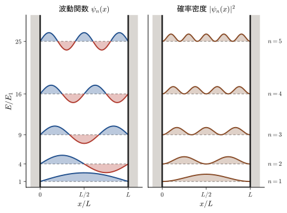
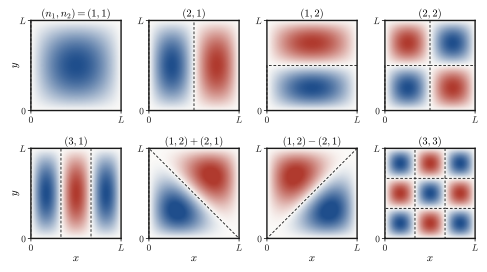
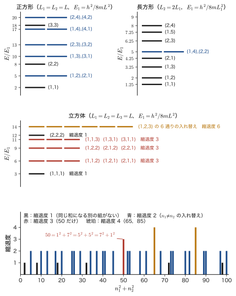
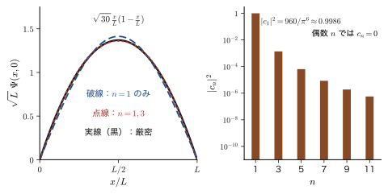
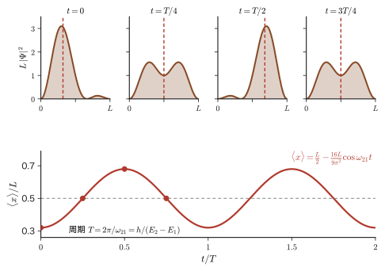
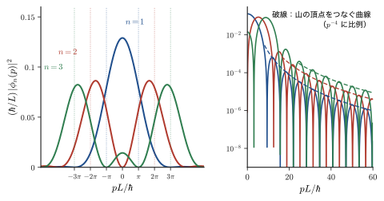
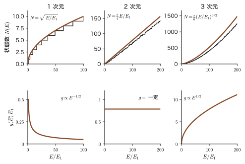
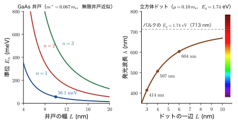

第10章無限井戸型ポテンシャル — 箱の中の粒子
ビリヤードの玉を長さ 1 m のレールの上に置いて左右の壁の間で往復させるとき，玉の速さは好きな値にできる．したがって運動エネルギーも好きな値にできる．ところが，同じことを電子で行い，壁の間隔を 1 nm 程度にすると，電子がとれるエネルギーは $0.376\ \mathrm{eV}$，$1.504\ \mathrm{eV}$，$3.384\ \mathrm{eV}$，……のようにとびとびの値だけになってしまう．エネルギーが「量子化」されるのである．前章で導いた Schrödinger（シュレーディンガー）方程式から，この量子化がどのように現れるのかを，数学的にもっとも簡単な状況で一行も飛ばさずに確かめるのが，この章の目的である．
取り上げるのは，無限に高い壁で挟まれた井戸の中を動く粒子——「箱の中の粒子」——である．方程式は $-\dfrac{\hbar^2}{2m}\psi''=E\psi$ という，高校物理で学んだ単振動の方程式とそっくりの形をしており，解は $\sin$ と $\cos$ である．違いは境界条件だけである．両端の壁で波動関数が $0$ になるという条件を課すと，弦楽器の弦の固有振動（AD 03「大学基礎物理学」第12章 12.6）と同じように，波長の半分の整数倍が箱の長さに収まる波だけが許される．弦の場合は「決まった高さの音しか出ない」という現象になるが，粒子の場合は「決まったエネルギーしかとれない」という現象になる．古典物理では粒子と波は別物だったが，量子力学では粒子が波として振る舞うので，同じ数学が使えるのである．
この単純な問題には，量子力学の主要な道具がほとんどすべて詰まっている．境界条件からエネルギーが量子化されること，規格化と確率密度，本書で初めて導入する Dirac 記法（ブラとケット）による内積・直交性・期待値の書き方，2 次元・3 次元への変数分離と縮退，位置・運動量の期待値と不確定性，時間を含む方程式の解を定常状態の重ね合わせで作ること（量子ビート），波動関数の運動量表示（Fourier 変換），そして固体の電子論の出発点になる状態密度とFermi エネルギーである．さらに，この模型は共役分子の色，半導体量子井戸の発光と赤外吸収，量子ドットの発光色を，ごく粗くではあるがまず説明してくれる．材料の光学特性の「大きさへの依存性」を最初に理解するための道具として，何度も使うことになる．
- 無限井戸の Schrödinger 方程式を，境界条件から行列式を経由する方法と偶奇の方法の 2 通りで解き，$E_n=n^2h^2/(8mL^2)$ と $\psi_n(x)=\sqrt{2/L}\,\sin(n\pi x/L)$ を導くこと
- Dirac 記法 $\ket{\psi}$，$\bra{\phi}$，$\braket{\phi}{\psi}$ の意味を理解し，規格化・直交性・期待値をこの記法で書けること
- 2 次元・3 次元の箱を変数分離で解き，縮退（同じエネルギーの異なる状態）の起源を対称性と数論の両面から説明できること
- $\langle x\rangle$，$\langle p\rangle$，$\langle T\rangle$，$\langle x^2\rangle$，$\Delta x\,\Delta p$ を直接計算し，「$\langle p\rangle=0$ なのに運動量は 0 ではない」理由を説明できること
- 時間を含む方程式を変数分離で解き，任意の初期状態を $\Psi=\sum_n c_n e^{-iE_nt/\hbar}\psi_n$ の形に展開して，量子ビートを計算できること
- 運動量分布 $\phi_n(p)$ を部分積分 2 回で求め，周期境界条件による状態密度と自由電子の Fermi エネルギー $E_{\mathrm F}=(\hbar^2/2m)(3\pi^2 n_{\mathrm e})^{2/3}$ を導けること
- 共役ポリエン・半導体量子井戸・量子ドットの光学的性質を，箱の中の粒子の準位で見積もれること
もとにしたノート：望月泰英『物理学ノート 量子力学2』 pp. 6–7，pp. 12–17．
10.1 1 次元の無限井戸 — 境界条件から量子化へ
10.1.1 問題の設定
電子（質量 $m$）が $x$ 軸上だけを動くことができ，しかもその運動が時間によらない（定常状態にある）とする．前章で導いたとおり，このとき波動関数の空間部分 $\psi(x)$ は，時間を含まない Schrödinger 方程式
\begin{equation} -\frac{\hbar^2}{2m}\frac{\dd^2\psi}{\dd x^2}+V(x)\,\psi=E\,\psi \label{eq:10-tise} \end{equation}を満たす．$V(x)$ はポテンシャルエネルギー，$E$ は求めたい全エネルギーの固有値である．ここでポテンシャルとして，次のものを考える．
定義10.1 無限井戸型ポテンシャル（箱の中の粒子）
正の定数 $a$ に対して，
\begin{equation} V(x)=\begin{cases}0 & (\abs{x}\le a)\\[1mm] \infty & (\abs{x}\gt a)\end{cases} \label{eq:10-V} \end{equation}で与えられるポテンシャルを無限井戸型ポテンシャル（infinite square well）といい，そのなかの粒子の問題を箱の中の粒子（particle in a box）という．井戸の幅は $L=2a$ である．境界条件は $\psi(a)=\psi(-a)=0$ とする．
記号：井戸の幅は $L$，半幅は $a$
姉妹編の大学数学（AD 02）第45章では井戸の半幅 $a$（幅 $2a$）を使い，大学基礎物理学（AD 03）では幅を $L$ と書いた．本書では幅を $L$ と書き，$L=2a$ とする．この節では，波動関数の偶奇が見やすい対称な座標（原点が井戸の中心）で $a$ を使い，結果はそのつど $L$ でも書く．また，井戸の内側の波数（波の $2\pi$ あたりの個数）は，角振動数 $\omega$ と紛れないように，本書では $k$ と書く：$k=\sqrt{2mE}/\hbar$．さらに，本書では箱の中の粒子の状態を $n=1,2,3,\dots$ と数える（$n=0$ は許されない．10.1.4 節）．調和振動子（第13章）は $n=0,1,2,\dots$ から始まるので，混同しないこと．
10.1.2 井戸の外側では $\psi=0$
まず $\abs{x}\gt a$ の領域を考える．古典力学の粒子は，壁の外に出るためには無限の運動エネルギーが必要なので，壁にぶつかると完全に弾き返され，壁の外には決して存在できない．したがって粒子は $\abs{x}\le a$ の領域にしか存在できない．量子力学でも同じ結論になるが，波動関数の言葉で言い直すと次のようになる．
なぜ壁の中で $\psi=0$ なのか
式 \eqref{eq:10-tise} を $\abs{x}\gt a$ で見ると，$V=\infty$ なので左辺の $V\psi$ が無限大になる．右辺 $E\psi$ は有限のエネルギー $E$ に対して有限だから，方程式が成り立つには $\psi=0$ でなければならない．
もう少し丁寧に，壁の高さを有限の $V_0$ にしてから $V_0\to\infty$ の極限をとって確かめよう（次章で詳しく解く）．壁の中（$E\lt V_0$）では方程式 $\psi''=\kappa^2\psi$，$\kappa=\sqrt{2m(V_0-E)}/\hbar$ の解は $\psi\propto e^{-\kappa\abs{x}}$ のように減衰し，しみ出しの深さは $1/\kappa$ 程度である．$V_0\to\infty$ で $\kappa\to\infty$ となるから，しみ出しの深さは $0$ になり，壁の中では $\psi=0$ となる．
さらに，波動関数は井戸の外と内で連続でなければならない（連続でないと，$\psi'$ に $\delta$ 関数が，$\psi''$ には $\delta$ 関数の導関数のような，さらに強い無限大の項が現れ，$V$ が有限の場所では方程式を満たせない）．壁の外で $\psi=0$ だから，連続性から壁の位置での値も $0$ になる．これが冒頭に掲げた境界条件 $\psi(\pm a)=0$ の意味である．つまり境界条件は，別に仮定する条件ではなく，「壁の中で $\psi=0$」と「$\psi$ の連続性」から出てくる結論である．
注意：壁で $\psi'$ は連続でなくてよい
有限の高さのポテンシャルでは，$\psi$ だけでなく導関数 $\psi'$ も連続でなければならない（次章）．しかし無限に高い壁では，壁の内側で $\psi'\ne0$（10.2 節で見るように，$\psi_n'(0)=\sqrt{2/L}\,n\pi/L\ne0$）なのに，壁の外では $\psi'=0$ である．つまり $\psi'$ は壁で跳ぶ．これは矛盾ではない．壁の位置では $V=\infty$ なので，方程式 $\psi''=\dfrac{2m}{\hbar^2}(V-E)\psi$ の右辺が「$\infty\times0$」の形になり，$\psi'$ の連続性を要求する根拠が失われるのである．有限の壁を $V_0\to\infty$ にする極限で見ると，壁での傾きは $\psi'(a)=-\kappa\,\psi(a)$ で，$\kappa\to\infty$，$\psi(a)\to0$ となる一方，積 $\kappa\,\psi(a)$ は 0 でない有限の値に残る．これが $\psi'$ の跳びの正体である．
10.1.3 井戸の内側の一般解
次に $\abs{x}\le a$ の領域を考える．ここでは $V=0$ なので，式 \eqref{eq:10-tise} は
\begin{equation} -\frac{\hbar^2}{2m}\frac{\dd^2\psi}{\dd x^2}=E\psi \qquad\text{すなわち}\qquad \psi''=-\frac{2mE}{\hbar^2}\,\psi \label{eq:10-inside} \end{equation}となる（内部には $x$ しか変数がないので，偏微分でなく常微分 $\dd/\dd x$ で書いた）．ここで $E\gt0$ を仮定して，
\begin{equation} k\equiv\frac{\sqrt{2mE}}{\hbar}\qquad\left(k^2=\frac{2mE}{\hbar^2}\right) \label{eq:10-k} \end{equation}とおくと，式 \eqref{eq:10-inside} は $\psi''=-k^2\psi$ という，高校物理の単振動と同じ形の方程式になる．$E\gt0$ という仮定は後で確かめる（10.1.5 節）．この方程式の解は $\cos kx$ と $\sin kx$ であることは，実際に代入して確認できる：$(\cos kx)''=-k^2\cos kx$，$(\sin kx)''=-k^2\sin kx$．2 階の線形同次微分方程式なので，独立な解は 2 個あり，一般解はそれらの線形結合である（大学数学 第35章 35.4）：
\begin{equation} \psi(x)=A\cos kx+B\sin kx \label{eq:10-gen} \end{equation}$A,B$ は境界条件で決まる定数である．Euler（オイラー）の公式で書き直すと $\psi=A'e^{ikx}+B'e^{-ikx}$ とも書ける．$e^{ikx}$ は右向きに進む平面波（運動量 $+\hbar k$），$e^{-ikx}$ は左向きに進む平面波（運動量 $-\hbar k$）だから，式 \eqref{eq:10-gen} は「壁で反射を繰り返す粒子の波」が，右向きの波と左向きの波の重なりでできた定在波になっていることを表している（$e^{ikx}$ と $\cos kx$ の違いは第1章でも扱った）．
10.1.4 境界条件と行列式 — 量子化の条件
式 \eqref{eq:10-gen} に境界条件を代入する．$\cos$ が偶関数（$\cos(-ka)=\cos ka$），$\sin$ が奇関数（$\sin(-ka)=-\sin ka$）であることに注意すると，
\begin{equation} \begin{cases} \psi(a)=A\cos ka+B\sin ka=0\\ \psi(-a)=A\cos ka-B\sin ka=0 \end{cases} \label{eq:10-bc} \end{equation}という，未知数 $A,B$ についての連立 1 次方程式が得られる．行列の形に書くと，
\begin{equation} \begin{bmatrix}\cos ka&\sin ka\\ \cos ka&-\sin ka\end{bmatrix} \begin{bmatrix}A\\B\end{bmatrix}=\begin{bmatrix}0\\0\end{bmatrix} \label{eq:10-mat} \end{equation}である（1 行目が $\psi(a)=0$，2 行目が $\psi(-a)=0$ に対応する）．
この同次連立 1 次方程式には，いつでも自明な解 $A=B=0$ がある．しかしこれは $\psi\equiv0$，すなわち「粒子がどこにもいない」という意味のない解である．粒子が存在するためには，$A,B$ が同時に $0$ でない非自明解が存在しなければならない．同次連立 1 次方程式 $M\bm{v}=\bm{0}$ が非自明解をもつための必要十分条件は，係数行列の行列式が $0$ になることである（大学数学 第9章 9.3）．そこで，
\begin{equation} \begin{vmatrix}\cos ka&\sin ka\\ \cos ka&-\sin ka\end{vmatrix} =\cos ka\cdot(-\sin ka)-\sin ka\cdot\cos ka=-2\sin ka\cos ka=-\sin 2ka=0 \label{eq:10-det} \end{equation}を得る．途中で，2 倍角の公式 $\sin2\theta=2\sin\theta\cos\theta$ を $\theta=ka$ として逆向きに使った．$\sin\theta=0$ となるのは $\theta$ が $\pi$ の整数倍のときだけなので，
\begin{equation} 2ka=n\pi\qquad(n=1,2,3,\dots) \label{eq:10-quant} \end{equation}が量子化の条件である．$n=0$ は $k=0$（$E=0$）にあたる．このとき式 \eqref{eq:10-inside} は $\psi''=0$ となり，その一般解は 1 次関数 $\psi=A+Bx$ である．境界条件 $\psi(\pm a)=A\pm Ba=0$ から $A=B=0$，すなわち $\psi\equiv0$ となるので $n=0$ は除く．また，$k=\sqrt{2mE}/\hbar$ は $0$ 以上の値として定義したので，負の整数 $n$ は考えなくてよい（形式的に $k\to-k$ としても，$\cos(-kx)=\cos kx$，$\sin(-kx)=-\sin kx$ なので，係数 $B\to-B$ と読み替えるだけで同じ状態になる）．したがって $n=1,2,3,\ldots$ だけを考えればよい．
別解：足し引きで解く（偶奇の方法）
行列式を使わなくても，式 \eqref{eq:10-bc} の 2 つの式を足したり引いたりすると，
$$ \psi(a)+\psi(-a)=2A\cos ka=0,\qquad \psi(a)-\psi(-a)=2B\sin ka=0 $$と，$A$ と $B$ が別々の方程式に分かれる（偶関数部分 $A\cos kx$ と奇関数部分 $B\sin kx$ が独立に境界条件を満たさなければならない）．したがって $A\ne0$ なら $\cos ka=0$，$B\ne0$ なら $\sin ka=0$ である．$\cos ka=0$ と $\sin ka=0$ は同時には成り立たない（$\cos^2+\sin^2=1$）ので，$A$ と $B$ の一方は $0$ になる．$\cos ka=0$ のとき $ka=\dfrac{\pi}{2},\dfrac{3\pi}{2},\dots$，すなわち $2ka=n\pi$（$n$ は奇数）．$\sin ka=0$ のとき $ka=\pi,2\pi,\dots$，すなわち $2ka=n\pi$（$n$ は偶数）．どちらも式 \eqref{eq:10-quant} に含まれ，奇数 $n$ が $\cos$ 型（偶関数），偶数 $n$ が $\sin$ 型（奇関数）に対応する．行列式の方法は一般の問題（次章の有限井戸など，境界条件が 4 個になる場合）にそのまま使える方法であり，偶奇の方法は対称なポテンシャルで手早く解く方法である．
10.1.5 エネルギーの量子化
式 \eqref{eq:10-quant} に式 \eqref{eq:10-k} を代入する．$2ka=\dfrac{2a\sqrt{2mE}}{\hbar}=n\pi$ の両辺を 2 乗して，
$$ \frac{4a^2\cdot 2mE}{\hbar^2}=n^2\pi^2 \qquad\therefore\quad E=\frac{(\pi\hbar)^2}{8ma^2}\,n^2\qquad(n=1,2,3,\dots) $$を得る．$a=L/2$ を代入し，$\hbar=h/2\pi$（すなわち $\pi^2\hbar^2=h^2/4$）を使うと，次の結果になる．
定理10.1 箱の中の粒子のエネルギー準位
幅 $L$ の 1 次元無限井戸の中の質量 $m$ の粒子のエネルギー固有値は，
\begin{equation} E_n=\frac{n^2\pi^2\hbar^2}{2mL^2}=\frac{n^2h^2}{8mL^2}\qquad(n=1,2,3,\dots) \label{eq:10-En} \end{equation}である．$n$ を量子数という（$n=0$ は許されない）．このときの波数と運動量の大きさは，
\begin{equation} k_n=\frac{n\pi}{L},\qquad p_n=\hbar k_n=\frac{n\pi\hbar}{L}=\frac{nh}{2L} \label{eq:10-kn} \end{equation}である．（$a=L/2$ を使うと，$E_n=\pi^2\hbar^2n^2/(8ma^2)$ とも書ける．）
エネルギーがとびとびの値をとる理由がここにはっきり現れている．「井戸の両端で波が $0$ になる」という条件が，波長 $\lambda=2\pi/k_n=2L/n$ を限定し，したがって運動量 $p=h/\lambda=nh/2L$ を限定するのである．$L=n\cdot\lambda/2$，すなわち半波長の整数倍が井戸の幅に収まる波だけが許される．これは両端を固定した弦の固有振動と同じ条件であり，運動エネルギー $p^2/2m=(nh/2L)^2/2m$ が式 \eqref{eq:10-En} と一致することも確認できる．
次元の確認
$\hbar^2/(mL^2)$ の単位は $(\mathrm{J\,s})^2/(\mathrm{kg\,m^2})=\mathrm{J^2\,s^2}/(\mathrm{kg\,m^2})$．ここで $\mathrm{J}=\mathrm{kg\,m^2\,s^{-2}}$ を使うと $\mathrm{J^2\,s^2}/(\mathrm{kg\,m^2})=\mathrm{J}\cdot(\mathrm{kg\,m^2\,s^{-2}})\mathrm{s^2}/(\mathrm{kg\,m^2})=\mathrm{J}$ となり，エネルギーの次元になっている．また $E_n\propto1/L^2$ なので，箱が狭いほど準位は高く，間隔も広い．
問い：$E\le0$ の解はないのか
10.1.3 節で $E\gt0$ と仮定した．これを確かめておく．式 \eqref{eq:10-inside} に左から $\psi^*$ をかけて $-a$ から $a$ まで積分し，部分積分を行うと，境界条件 $\psi(\pm a)=0$ により境界項が消えて，
$$ E\int_{-a}^{a}\abs{\psi}^2\dd x=-\frac{\hbar^2}{2m}\int_{-a}^{a}\psi^*\psi''\dd x=\frac{\hbar^2}{2m}\int_{-a}^{a}\abs{\psi'}^2\dd x\ \ge\ 0 $$となる．$\int\abs{\psi}^2\dd x\gt0$ なので $E\ge0$ である．さらに $E=0$ なら $\psi'\equiv0$，つまり $\psi$ は定数で，境界条件から $\psi\equiv0$ となってしまう．よって $E\gt0$ であり，最低の準位でも運動エネルギーが $0$ にならない．これは，箱に閉じ込めると（$\Delta x$ が有限になると）運動量が完全には $0$ になれない（$\Delta p\ne0$）という，不確定性原理の帰結である（10.4 節）．
10.1.6 応用：ヘキサトリエンの $\pi$ 電子は「箱の中の粒子」に似ている
この単純な模型が実在の物質に使える例を見よう．ヘキサトリエン $\mathrm{CH_2{=}CH{-}CH{=}CH{-}CH{=}CH_2}$ は，6 個の炭素が一列に並び，二重結合と単結合が交互に並んだ分子（共役ポリエン）である．各炭素の $\pi$ 電子（分子面に垂直に広がる $2p$ 軌道にいる電子）は，特定の炭素原子に束縛されず，鎖全体に広がって動くことができる．鎖の両端の外には $\pi$ 電子は出られない．つまり，$\pi$ 電子の存在範囲は，両端に壁をもつ 1 次元の井戸に似ている（図10.2）．
電子には，スピンとよばれる 2 通りの内部状態（上向き $\uparrow$ と下向き $\downarrow$）がある（第23章）．Pauli（パウリ）の排他原理（第33章）により，同じ軌道状態（同じ $n$）には，スピンの向きが異なる電子を 2 個までしか入れられない．したがって，6 個の $\pi$ 電子は，エネルギーの低い準位から順に，$n=1,2,3$ の各準位に 2 個ずつ入る．
例10.1 ヘキサトリエンの基底準位
$\pi$ 電子の存在範囲を幅 $L=0.727\ \mathrm{nm}$ の無限井戸とみなしたとき，電子（$m=m_{\mathrm e}$）の最低準位 $E_1$ を求めよ．ただし $h=6.626\times10^{-34}\ \mathrm{J\,s}$，$m_{\mathrm e}=9.109\times10^{-31}\ \mathrm{kg}$ とする．
解答 式 \eqref{eq:10-En} で $n=1$ とすると，$E_1=\dfrac{\pi^2\hbar^2}{2m_{\mathrm e}L^2}\cdot1^2=\dfrac{h^2}{8m_{\mathrm e}L^2}$ である．分子は $h^2=(6.626\times10^{-34})^2=4.390\times10^{-67}\ \mathrm{J^2\,s^2}$．分母は $L^2=(0.727\times10^{-9}\ \mathrm{m})^2=5.285\times10^{-19}\ \mathrm{m^2}$ を使って $8m_{\mathrm e}L^2=8\times9.109\times10^{-31}\times5.285\times10^{-19}=3.851\times10^{-48}\ \mathrm{kg\,m^2}$．したがって
$$ E_1=\frac{4.390\times10^{-67}}{3.851\times10^{-48}}\ \mathrm{J}=1.140\times10^{-19}\ \mathrm{J}=\frac{1.1399\times10^{-19}}{1.602\times10^{-19}}\ \mathrm{eV}=0.7115\ \mathrm{eV} $$である（割り算の中間値 $1.1399\times10^{-19}\ \mathrm{J}$ を使って eV に換算した）．高い準位は $E_n=n^2E_1$ なので，$E_2=2.85\ \mathrm{eV}$，$E_3=6.40\ \mathrm{eV}$，$E_4=11.4\ \mathrm{eV}$ となる．（この鎖の長さ $0.727\ \mathrm{nm}$ は，隣り合う炭素の間隔として有効な値 $d\approx0.145\ \mathrm{nm}$ を 5 本分とったものである．実際の結合の長さは C=C が約 $0.134\ \mathrm{nm}$，C−C が約 $0.146\ \mathrm{nm}$ で，5 本の合計は約 $0.69\ \mathrm{nm}$ になる．模型のパラメーターとして，$\pi$ 電子が両端の炭素の外側にも少し広がる分を含めた長さと考えればよい．）
例題10.1 電子の箱の準位と間隔
幅 $L=0.5\ \mathrm{nm}$ の無限井戸に閉じ込められた電子について，(1) 一般の $L$ について $E_n$ を $\mathrm{eV}$ で表す係数を求めよ．(2) $n=1,2,3$ の準位と，隣り合う準位の間隔を求めよ．
解答 (1) 式 \eqref{eq:10-En} の $h^2/(8m_{\mathrm e})$ を計算しておく．$h=6.626\,070\,15\times10^{-34}\ \mathrm{J\,s}$，$m_{\mathrm e}=9.109\,383\,7\times10^{-31}\ \mathrm{kg}$ より
$$ \frac{h^2}{8m_{\mathrm e}}=\frac{(6.626\,070\times10^{-34})^2}{8\times9.109\,384\times10^{-31}}=6.0247\times10^{-38}\ \mathrm{J\,m^2} $$である．$1\ \mathrm{eV}=1.602\,177\times10^{-19}\ \mathrm{J}$，$1\ \mathrm{nm^2}=10^{-18}\ \mathrm{m^2}$ を使って，$\dfrac{6.0247\times10^{-38}}{1.602\,177\times10^{-19}\times10^{-18}}=0.3760\ \mathrm{eV\,nm^2}$．よって
$$ E_n=0.3760\,\frac{n^2}{(L/\mathrm{nm})^2}\ \mathrm{eV} $$（$L=0.727\ \mathrm{nm}$ とすると $E_1=0.3760/0.5285=0.7115\ \mathrm{eV}$ となり，例10.1 と一致する．）(2) $L=0.5\ \mathrm{nm}$ では $E_n=0.3760\,n^2/0.25=1.504\,n^2\ \mathrm{eV}$ だから，
$$ E_1=1.504\ \mathrm{eV},\quad E_2=6.016\ \mathrm{eV},\quad E_3=13.54\ \mathrm{eV} $$間隔は $E_2-E_1=3E_1=4.51\ \mathrm{eV}$，$E_3-E_2=5E_1=7.52\ \mathrm{eV}$．一般に $E_{n+1}-E_n=(2n+1)E_1$ で，準位が高いほど間隔は広がる．原子・分子の準位の間隔が数 $\mathrm{eV}$ であることとほぼ同じ大きさであり，nm 程度の閉じ込めが原子の世界の量子効果を生むことがわかる．
例題10.2 野球ボールを 1 m の箱に入れると（古典極限）
質量 $0.145\ \mathrm{kg}$ の野球ボールを，幅 $L=1\ \mathrm{m}$ の箱に入れ，速さ $1\ \mathrm{m/s}$ で往復させる．(1) 最低準位 $E_1$ を求めよ．(2) このボールの量子数 $n$ と，隣り合う準位の間隔の比 $(E_{n+1}-E_n)/E_n$ を求めよ．
解答 (1) 式 \eqref{eq:10-En} で $n=1$：$E_1=\dfrac{h^2}{8mL^2}=\dfrac{(6.626\times10^{-34})^2}{8\times0.145\times1^2}=\dfrac{4.390\times10^{-67}}{1.16}=3.78\times10^{-67}\ \mathrm{J}$．(2) 運動エネルギー $E=\tfrac12mv^2=\tfrac12\times0.145\times1^2=0.0725\ \mathrm{J}$ である．$E=n^2E_1$ より
$$ n=\sqrt{\frac{E}{E_1}}=\sqrt{\frac{0.0725}{3.78\times10^{-67}}}=\sqrt{1.92\times10^{65}}=4.4\times10^{32} $$隣り合う準位の間隔は $E_{n+1}-E_n=(2n+1)E_1$ なので，$\dfrac{E_{n+1}-E_n}{E_n}=\dfrac{2n+1}{n^2}\approx\dfrac{2}{n}=4.6\times10^{-33}$ である．準位の間隔は準位そのものの $10^{-33}$ 倍にすぎず，どんな測定でも準位のとびとびは見えない．エネルギーは事実上連続に見える．これが古典力学の成り立つ理由（対応原理）である．量子数 $n$ が非常に大きい極限では，量子力学の結果が古典力学の結果に連続的につながる．
10.1.7 波動関数：$n$ の偶奇による場合分け
式 \eqref{eq:10-quant} より $k=\dfrac{n\pi}{2a}=\dfrac{n\pi}{L}$ である．エネルギーの結果を $k=\sqrt{2mE}/\hbar$ に代入して確かめても，$k=\dfrac{1}{\hbar}\sqrt{2m\cdot\dfrac{(\pi\hbar)^2}{8ma^2}\,n^2}=\dfrac{1}{\hbar}\cdot\dfrac{\pi\hbar\,n}{2a}=\dfrac{n\pi}{2a}$ で一致する．これを式 \eqref{eq:10-gen} に戻すと，一般解は
$$ \psi(x)=A\cos\frac{n\pi}{2a}x+B\sin\frac{n\pi}{2a}x\qquad(\abs{x}\le a) $$となる．次に，境界条件 $\psi(a)=0$ を使って $A,B$ の関係を決める．$\psi(a)=A\cos\dfrac{n\pi}{2}+B\sin\dfrac{n\pi}{2}=0$ である（$\psi(-a)=0$ を使っても $A\cos\dfrac{n\pi}{2}-B\sin\dfrac{n\pi}{2}=0$ となり，以下の結論は同じである）．$\cos\dfrac{n\pi}{2}$ と $\sin\dfrac{n\pi}{2}$ は，$n$ の偶奇で次のようになる．
| $n$ | 1 | 2 | 3 | 4 | 5 | 6 |
|---|---|---|---|---|---|---|
| $\cos\dfrac{n\pi}{2}$ | 0 | $-1$ | 0 | 1 | 0 | $-1$ |
| $\sin\dfrac{n\pi}{2}$ | 1 | 0 | $-1$ | 0 | 1 | 0 |
[i] $n$ が奇数のとき（$n=1,3,5,\dots$）．$\cos\dfrac{n\pi}{2}=0$ で，$\sin\dfrac{n\pi}{2}=\pm1\ne0$．境界条件は $B\sin\dfrac{n\pi}{2}=0$ となるので，$B=0$ である．したがって
$$ \psi(x)=A\cos\frac{n\pi}{2a}x\qquad(n=1,3,5,\dots) $$[ii] $n$ が偶数のとき（$n=2,4,6,\dots$）．$\sin\dfrac{n\pi}{2}=0$ で，$\cos\dfrac{n\pi}{2}=\pm1\ne0$．境界条件は $A\cos\dfrac{n\pi}{2}=0$ となるので，$A=0$ である．したがって
$$ \psi(x)=B\sin\frac{n\pi}{2a}x\qquad(n=2,4,6,\dots) $$奇数 $n$ の波動関数は $x=0$ について偶関数（$\cos$），偶数 $n$ は奇関数（$\sin$）である．これは井戸が $x=0$ について対称であること（$V(-x)=V(x)$）の反映で，波動関数のパリティ（偶奇性）とよばれる（図10.3）．残った定数 $A$，$B$ は，次節の規格化で決まる．
10.2 規格化と Dirac 記法 — 内積・直交性・固有関数の性質
10.2.1 定数 $A$，$B$ を決める：規格化
Schrödinger 方程式は $\psi$ について線形同次なので，$\psi$ が解なら $2\psi$ や $-\psi$ も解であり，方程式と境界条件だけでは定数 $A$ や $B$ の大きさは決まらない．大きさを決めるのが，Born（ボルン）の確率解釈である．前章までに見たとおり，$\abs{\psi(x)}^2$ は粒子が位置 $x$ の近くに見いだされる確率密度であり，$\abs{\psi(x)}^2\dd x$ が $x$ から $x+\dd x$ の間に粒子を見いだす確率である．したがって粒子が $x$ 軸上のどこかにいる確率は $1$ でなければならない：
\begin{equation} \int_{-\infty}^{\infty}\abs{\psi(x)}^2\dd x=1 \label{eq:10-norm} \end{equation}これを規格化条件（normalization condition）という．ここで注意すべきは，確率密度が $\abs{\psi}^2$ であって $\psi$ そのものではないことである．$\psi$ は一般に複素数の値をとり，確率としては意味をもたない．
10.2.2 Dirac 記法の導入
式 \eqref{eq:10-norm} の左辺の積分は，今後何度も現れる．そこで，この積分を簡潔に書くための記号を導入する．波動関数を $\psi(x)$ のように「$x$ の関数」として書く代わりに，状態そのものを表す抽象的な記号 $\ket{\psi}$ を用いる書き方があり，Dirac（ディラック）記法とよばれる．
定義10.2 ケット・ブラ・内積（Dirac 記法）
(1) 量子状態を ケット（ket）$\ket{\psi}$ と書く．位置 $x$ の関数として表した波動関数 $\psi(x)$ は，このケットの「$x$ 表示」である（$\psi(x)$ が，$\ket{\psi}$ と位置の固有ケット $\ket{x}$ との内積であることは，10.6.1 節で説明する）．
(2) ケット $\ket{\psi}$ に対し，その複素共役に対応する ブラ（bra）$\bra{\psi}$ を考える．波動関数では $\psi^*(x)$ に対応する．
(3) 2 つの状態 $\ket{\psi}$，$\ket{\phi}$ の 内積（inner product）を，ブラとケットを並べて
と定義する（2 次元・3 次元では $\int\dd x\dd y$，$\int\dd^3r$ に読み替える）．
(4) 演算子 $\hat{A}$ をはさんだ量を，
と書く．特に 期待値は $\expval{\hat{A}}=\mel{\psi}{\hat{A}}{\psi}$ である．
(5) ケットとブラを，内積とは逆の順に並べた $\ket{\phi}\bra{\psi}$ は，数ではなく演算子である．ケット $\ket{\chi}$ に作用させると，$\bigl(\ket{\phi}\bra{\psi}\bigr)\ket{\chi}=\ket{\phi}\,\braket{\psi}{\chi}$，すなわちケット $\ket{\phi}$ の $\braket{\psi}{\chi}$ 倍を与える（10.5.2 節で使う）．
「ブラ」と「ケット」という名は，英語の括弧 bracket を 2 つに割った $\langle\ |\ \rangle$ の左半分 $\langle\phi|$（bra）と右半分 $|\psi\rangle$（ket）に由来する．この記法を使うと，規格化条件 \eqref{eq:10-norm} は，次のように書ける．
\begin{equation} \braket{\psi}{\psi}=\int_{-\infty}^{\infty}\psi^*(x)\,\psi(x)\dd x=\int_{-\infty}^{\infty}\abs{\psi(x)}^2\dd x=1 \label{eq:10-norm-bk} \end{equation}これは $\ket{\psi}$ 自身との内積が $1$ であること，つまり状態 $\ket{\psi}$ の「長さ」（ノルム）が $1$ であることを意味する．内積には次の性質がある．どれも式 \eqref{eq:10-inner} の定義から 1 行で確かめられる．
- 複素共役：$\braket{\phi}{\psi}^*=\braket{\psi}{\phi}$．実際，$\braket{\phi}{\psi}^*=\Bigl(\displaystyle\int\phi^*\psi\dd x\Bigr)^*=\int\phi\,\psi^*\dd x=\braket{\psi}{\phi}$ である（積分の複素共役は，被積分関数の複素共役の積分）．
- 線形性：$\bra{\phi}\bigl(c_1\ket{\psi_1}+c_2\ket{\psi_2}\bigr)=c_1\braket{\phi}{\psi_1}+c_2\braket{\phi}{\psi_2}$（ケットについて線形）．ブラについては，$c_1\ket{\phi_1}+c_2\ket{\phi_2}$ に対応するブラが $c_1^*\bra{\phi_1}+c_2^*\bra{\phi_2}$ となる（複素共役がつく）．前者は積分の線形性 $\int\phi^*(c_1\psi_1+c_2\psi_2)\dd x=c_1\int\phi^*\psi_1\dd x+c_2\int\phi^*\psi_2\dd x$ から，後者は $(c_1\phi_1+c_2\phi_2)^*=c_1^*\phi_1^*+c_2^*\phi_2^*$ から出る．
- 正値性：$\braket{\psi}{\psi}=\displaystyle\int\abs{\psi}^2\dd x\ge0$．被積分関数 $\abs{\psi}^2$ がどこでも $0$ 以上だからである．等号は，$\abs{\psi}^2\equiv0$，すなわち $\psi\equiv0$ のときに限る．
| 量 | 積分で書く | Dirac 記法 |
|---|---|---|
| 規格化 | $\displaystyle\int\psi^*\psi\dd x=1$ | $\braket{\psi}{\psi}=1$ |
| 正規直交性 | $\displaystyle\int\psi_m^*\psi_n\dd x=\delta_{mn}$ | $\braket{m}{n}=\delta_{mn}$ |
| 期待値 | $\displaystyle\int\psi^*\,\hat{A}\psi\dd x$ | $\mel{\psi}{\hat{A}}{\psi}=\expval{\hat{A}}$ |
| 行列要素 | $\displaystyle\int\psi_m^*\,\hat{A}\psi_n\dd x$ | $\mel{m}{\hat{A}}{n}$ |
| 展開係数 | $c_n=\displaystyle\int\psi_n^*\Psi\dd x$ | $c_n=\braket{n}{\Psi}$ |
| 展開 | $\Psi=\displaystyle\sum_nc_n\psi_n$ | $\ket{\Psi}=\displaystyle\sum_nc_n\ket{n}$ |
表10.2 の $\ket{n}$ は，固有関数 $\psi_n$ に対応するケットである（10.2.5 節）．積分で書くと長くなる式が，ブラとケットを「はさむ」形で短く書けることがわかる．
数学の道具：関数の内積とベクトルの内積
式 \eqref{eq:10-inner} は，2 つの数ベクトル $\bm{u}=(u_1,\dots,u_N)$，$\bm{v}=(v_1,\dots,v_N)$ の内積 $\sum_i u_i^*v_i$ の和を積分に置き換えたものである．関数 $\psi(x)$ を，「各点 $x$ での値」という無限個の成分をもつベクトルとみなすのである．実数の関数の内積とノルムは AD 02 第27章（27.2 関数の内積とノルム）で扱った．量子力学では波動関数が複素数なので，左側の関数に複素共役をつける点だけが違う．内積を「ブラとケットの積」$\braket{\phi}{\psi}$ と書くのが Dirac 記法である．
注意：$\braket{\phi}{\psi}$ は $x$ の関数ではなく，ただの数
$\braket{\phi}{\psi}$ は，$x$ で積分した後の（一般に複素数の）数であって，$x$ の関数ではない．この章から，$\int\phi^*\psi\dd x$ を $\braket{\phi}{\psi}$，$\int\phi^*\hat{A}\psi\dd x$ を $\mel{\phi}{\hat{A}}{\psi}$ と書く．積分が現れたら，$x$ で積分して得られる「数」であることを意識してほしい．
10.2.3 規格化定数の決定
以上の準備のもとで，10.1.7 節の波動関数の定数を決める．井戸の外では $\psi=0$ なので，規格化積分 \eqref{eq:10-norm} は井戸の内側 $[-a,a]$ だけの積分になる．
導出：規格化定数
[i] 奇数 $n$（$\psi=A\cos\dfrac{n\pi}{2a}x$）．$A$ を実数にとると，$\cos^2\theta=\dfrac{1+\cos2\theta}{2}$（高校数学 第5章 5.3 の半角の公式）で $\theta=\dfrac{n\pi}{2a}x$，$2\theta=\dfrac{n\pi}{a}x$ とおいて，
$$ \braket{\psi}{\psi}=A^2\int_{-a}^{a}\cos^2\frac{n\pi x}{2a}\dd x=A^2\int_{-a}^{a}\frac{1+\cos\frac{n\pi}{a}x}{2}\dd x =\frac{A^2}{2}\left[x+\frac{a}{n\pi}\sin\frac{n\pi}{a}x\right]_{-a}^{a} $$となる．$\sin n\pi=0$，$\sin(-n\pi)=0$ なので，括弧の中は $a+0-(-a)-0=2a$ である．よって
$$ \braket{\psi}{\psi}=\frac{A^2}{2}\cdot2a=aA^2=1\qquad\therefore\ A=\frac{1}{\sqrt{a}} $$（$A$ に $e^{i\alpha}$ のような位相因子をかけても規格化は変わらないが，全体の位相は物理的な結果に影響しないので，$A$ は正の実数にとる）．
[ii] 偶数 $n$（$\psi=B\sin\dfrac{n\pi}{2a}x$）．同様に $\sin^2\theta=\dfrac{1-\cos2\theta}{2}$ を使うと，
$$ \braket{\psi}{\psi}=B^2\int_{-a}^{a}\frac{1-\cos\frac{n\pi}{a}x}{2}\dd x=\frac{B^2}{2}\left[x-\frac{a}{n\pi}\sin\frac{n\pi}{a}x\right]_{-a}^{a}=\frac{B^2}{2}\cdot2a=aB^2=1 $$となり，$B=1/\sqrt{a}$ を得る．
（導出終わり）
まとめると，井戸の中心を原点にとった座標では，規格化された波動関数は次のようになる．
\begin{equation} \psi_n(x)=\begin{cases} \dfrac{1}{\sqrt{a}}\cos\dfrac{n\pi}{2a}x & (n=1,3,5,\dots)\\[3mm] \dfrac{1}{\sqrt{a}}\sin\dfrac{n\pi}{2a}x & (n=2,4,6,\dots) \end{cases}\qquad(\abs{x}\le a),\qquad \psi_n(x)=0\ \ (\abs{x}\gt a) \label{eq:10-psi-sym} \end{equation}係数は $1/\sqrt{a}=\sqrt{2/L}$ である．奇数と偶数の場合を，1 つの式にまとめることもできる．次項でそれを行う．
10.2.4 座標のとり方と 1 つの式へのまとめ
座標の原点を左の壁にずらして，$x'=x+a\in[0,L]$（$L=2a$）で考える（図10.1(b)）．このとき壁は $x'=0$ と $x'=L$ にあり，境界条件は $\psi(0)=\psi(L)=0$ となる．この座標では，境界条件だけから解が 1 行で求まる．
導出：座標 $[0,L]$ での解
井戸の内側 $0\le x\le L$（以後 $x'$ を単に $x$ と書く）の一般解は，式 \eqref{eq:10-gen} と同じ $\psi=A\cos kx+B\sin kx$ である．$\psi(0)=A=0$ より $\psi=B\sin kx$．$\psi(L)=B\sin kL=0$ で $B\ne0$ なので，$\sin kL=0$，すなわち
$$ kL=n\pi\qquad\therefore\ k=\frac{n\pi}{L}\ ,\quad E=\frac{\hbar^2k^2}{2m}=\frac{n^2\pi^2\hbar^2}{2mL^2}\quad(n=1,2,\dots) $$となり，式 \eqref{eq:10-En} と一致する．規格化は $\displaystyle\int_0^L B^2\sin^2\frac{n\pi x}{L}\dd x=B^2\int_0^L\frac{1-\cos\frac{2n\pi x}{L}}{2}\dd x=B^2\Bigl[\frac{x}{2}-\frac{L}{4n\pi}\sin\frac{2n\pi x}{L}\Bigr]_0^L=\frac{B^2L}{2}=1$ より $B=\sqrt{2/L}$．
（導出終わり）
定理10.2 箱の中の粒子の固有関数（規格化されたもの）
幅 $L$，壁の位置が $x=0$ と $x=L$ の無限井戸の固有関数は
\begin{equation} \psi_n(x)=\sqrt{\frac{2}{L}}\,\sin\frac{n\pi x}{L}\quad(0\le x\le L),\qquad E_n=\frac{n^2h^2}{8mL^2}=\frac{n^2\pi^2\hbar^2}{2mL^2}\qquad(n=1,2,3,\dots) \label{eq:10-psi} \end{equation}である（井戸の外では $\psi_n=0$）．$\psi_n$ は $n-1$ 個の節（$\psi_n=0$ となる内部の点，$x=jL/n$，$j=1,\dots,n-1$）をもつ．
例題10.3 座標を平行移動しても同じ状態であること
式 \eqref{eq:10-psi-sym} で $x=x'-a$ とおいた関数が，式 \eqref{eq:10-psi} の $\psi_n(x')$ と符号を除いて一致することを示せ．
解答 $\dfrac{n\pi}{2a}x=\dfrac{n\pi}{2a}(x'-a)=\dfrac{n\pi x'}{L}-\dfrac{n\pi}{2}$（$L=2a$）である．$\theta=\dfrac{n\pi x'}{L}$ とおく．
奇数 $n$ のとき，$\cos\left(\theta-\dfrac{n\pi}{2}\right)=\cos\theta\cos\dfrac{n\pi}{2}+\sin\theta\sin\dfrac{n\pi}{2}=\sin\theta\cdot\sin\dfrac{n\pi}{2}$（$\cos\dfrac{n\pi}{2}=0$ を使った）．$\sin\dfrac{n\pi}{2}=(-1)^{(n-1)/2}$ なので，$\psi_n=\dfrac{(-1)^{(n-1)/2}}{\sqrt{a}}\sin\dfrac{n\pi x'}{L}$．
偶数 $n$ のとき，$\sin\left(\theta-\dfrac{n\pi}{2}\right)=\sin\theta\cos\dfrac{n\pi}{2}-\cos\theta\sin\dfrac{n\pi}{2}=\sin\theta\cdot\cos\dfrac{n\pi}{2}$（$\sin\dfrac{n\pi}{2}=0$）．$\cos\dfrac{n\pi}{2}=(-1)^{n/2}$ なので，$\psi_n=\dfrac{(-1)^{n/2}}{\sqrt{a}}\sin\dfrac{n\pi x'}{L}$．
どちらの場合も $\pm\dfrac{1}{\sqrt{a}}\sin\dfrac{n\pi x'}{L}$ で，$1/\sqrt{a}=\sqrt{2/L}$ だから式 \eqref{eq:10-psi} と符号を除いて一致する．符号は全体にかかる定数（位相 $e^{i\alpha}$ の特別な場合）で，物理的な結果（$\abs{\psi}^2$ や期待値）には影響しない．エネルギーも $E_n=\pi^2\hbar^2n^2/(8ma^2)=n^2\pi^2\hbar^2/(2mL^2)$ で同じである．
10.2.5 固有関数の性質

式 \eqref{eq:10-psi} の固有関数には，次の重要な性質がある．
- 節の数と曲がり：$\psi_n$ は内部に $n-1$ 個の節をもつ．節が多いほど波長が短く，波動関数の曲がり（$\abs{\psi''}$）が大きい．運動エネルギーは $\dfrac{\hbar^2}{2m}\abs{\psi'}^2$ の積分（10.1.5 節）なので，節が多いほどエネルギーが高い．
- パリティ：井戸の中心 $x=L/2$ について，$\psi_n(L-x)=(-1)^{n+1}\psi_n(x)$．$n$ が奇数なら偶関数，偶数なら奇関数．
- 古典極限：$\abs{\psi_n}^2=\dfrac{2}{L}\sin^2\dfrac{n\pi x}{L}$ は，$n$ が大きいと非常に細かく振動する．細かい振動を平均すると $\dfrac{1}{L}$ となり，これは古典粒子が壁の間を等速で往復するときに，井戸のどの場所にも同じ確率で見いだされることに対応する．一方 $n=1$（基底状態）では，中央に見いだされる確率が両端よりずっと大きい．これは古典物理では決して現れない分布である．
定理10.3 固有関数の直交性と規格性（正規直交性）
$m,n$ を正の整数とすると，
\begin{equation} \braket{\psi_m}{\psi_n}=\int_0^L\psi_m(x)\,\psi_n(x)\dd x=\delta_{mn}=\begin{cases}1&(m=n)\\0&(m\ne n)\end{cases} \label{eq:10-orth} \end{equation}である．$\delta_{mn}$ は Kronecker（クロネッカー）のデルタである．
証明
$m=n$ の場合は規格化そのものである．$m\ne n$ の場合，積和の公式 $\sin\alpha\sin\beta=\dfrac12\bigl[\cos(\alpha-\beta)-\cos(\alpha+\beta)\bigr]$（高校数学 第5章 5.5）より，
$$ \braket{\psi_m}{\psi_n}=\frac{2}{L}\int_0^L\sin\frac{m\pi x}{L}\sin\frac{n\pi x}{L}\dd x =\frac{1}{L}\int_0^L\left[\cos\frac{(m-n)\pi x}{L}-\cos\frac{(m+n)\pi x}{L}\right]\dd x $$ $$ =\frac{1}{L}\left[\frac{L}{(m-n)\pi}\sin\frac{(m-n)\pi x}{L}-\frac{L}{(m+n)\pi}\sin\frac{(m+n)\pi x}{L}\right]_0^L=0 $$となる（$m-n$，$m+n$ が $0$ でない整数なので，$x=L$ と $x=0$ で $\sin$ はともに $0$）．
（証明終わり）
直交性は偶然ではない．エネルギーの異なる 2 つの固有状態は，Hermite（エルミート）演算子 $\hat{H}$ の固有ベクトルなので必ず直交する（前章）．ここでは $\sin$ の積分で直接確かめた．固有関数が「互いに直交する長さ 1 のベクトル」であることは，任意の関数を $\psi_n$ の線形結合で表す（10.5 節）ときに決定的な役割を果たす．なお，Dirac 記法では，$\psi_n$ に対応するケットを単に $\ket{n}$ と書くことが多い．このとき式 \eqref{eq:10-orth} は $\braket{m}{n}=\delta_{mn}$ である．
例題10.4 行列要素 $\mel{\psi_1}{\hat{x}}{\psi_2}$ と重なり $\braket{\psi_1}{\psi_2}$
幅 $L$ の井戸で，(1) $\braket{\psi_1}{\psi_2}$，(2) $\mel{\psi_1}{\hat{x}}{\psi_2}=\displaystyle\int_0^L\psi_1(x)\,x\,\psi_2(x)\dd x$ を求めよ．（(2) は 10.5 節の量子ビートで使う．）
解答 (1) 式 \eqref{eq:10-orth} の直交性により $\braket{\psi_1}{\psi_2}=0$．
(2) $\mel{\psi_1}{\hat{x}}{\psi_2}=\dfrac{2}{L}\displaystyle\int_0^Lx\sin\frac{\pi x}{L}\sin\frac{2\pi x}{L}\dd x$．積和の公式で $\sin\dfrac{\pi x}{L}\sin\dfrac{2\pi x}{L}=\dfrac12\left[\cos\dfrac{\pi x}{L}-\cos\dfrac{3\pi x}{L}\right]$ だから，$q_j=j\pi/L$ とおいて $I_j\equiv\int_0^Lx\cos q_jx\dd x$ が必要である．部分積分より
$$ I_j=\left[\frac{x\sin q_jx}{q_j}\right]_0^L-\int_0^L\frac{\sin q_jx}{q_j}\dd x=0+\left[\frac{\cos q_jx}{q_j^2}\right]_0^L=\frac{\cos j\pi-1}{q_j^2}=\frac{(-1)^j-1}{q_j^2} $$となる（$\sin q_jL=\sin j\pi=0$）．$j=1$：$I_1=-2L^2/\pi^2$．$j=3$：$I_3=-2L^2/(9\pi^2)$．したがって
$$ \mel{\psi_1}{\hat{x}}{\psi_2}=\frac{2}{L}\cdot\frac{1}{2}\,(I_1-I_3)=\frac{1}{L}\left(-\frac{2L^2}{\pi^2}+\frac{2L^2}{9\pi^2}\right)=-\frac{16L}{9\pi^2}\approx-0.180\,L $$である．
10.2.6 波動関数が壁で折れ曲がること
10.1.2 節の注意で述べた，$\psi'$ の跳びを確認しておく．式 \eqref{eq:10-psi} の微分は $\psi_n'(x)=\sqrt{2/L}\,\dfrac{n\pi}{L}\cos\dfrac{n\pi x}{L}$ であり，壁の内側での値は $\psi_n'(0^+)=\sqrt{2/L}\,\dfrac{n\pi}{L}$，$\psi_n'(L^-)=(-1)^n\sqrt{2/L}\,\dfrac{n\pi}{L}$ である．壁の外側では $\psi_n'=0$ だから，壁の位置で $\psi_n'$ は有限の値だけ跳ぶ．波動関数のグラフは，壁の位置で $0$ を通って折れ曲がる（図10.3）．この折れ曲がりが運動量分布の裾（10.6 節）や $\hat{p}^4$ の期待値の発散に関係する．
10.3 2 次元・3 次元の箱 — 変数分離と縮退
10.3.1 2 次元の無限井戸：問題の設定
現実の物質の中の電子は 3 次元の世界を動くが，量子井戸（薄膜）や量子細線のように，特定の方向にだけ強く閉じ込められている場合も多い．次元を 1 つ増やして，電子が $xy$ 平面上を動く場合を考えよう．波動関数は時間によらないとし，ポテンシャルは，一辺 $2a$ の正方形の内側で $0$，外側で $\infty$ とする（$L=2a$）：
\begin{equation} V(x,y)=\begin{cases}0&(\abs{x}\le a\ \text{かつ}\ \abs{y}\le a)\\[1mm]\infty&(\abs{x}\gt a\ \text{または}\ \abs{y}\gt a)\end{cases} \label{eq:10-V2d} \end{equation}解くべき方程式は，時間を含まない 2 次元の Schrödinger 方程式
\begin{equation} -\frac{\hbar^2}{2m}\left(\frac{\partial^2\psi}{\partial x^2}+\frac{\partial^2\psi}{\partial y^2}\right)+V(x,y)\,\psi=E\psi \label{eq:10-tise2d} \end{equation}で，境界条件は $\psi(\pm a,y)=0$，$\psi(x,\pm a)=0$ である．10.1.2 節と同じ理由で，正方形の外側では $\psi=0$ となる．以下，内側 $\abs{x}\le a$，$\abs{y}\le a$ で解く（数学の側面からの扱いは，大学数学 第45章 45.5）．
10.3.2 変数分離
内側では $V=0$ なので，方程式は $-\dfrac{\hbar^2}{2m}\left(\dfrac{\partial^2\psi}{\partial x^2}+\dfrac{\partial^2\psi}{\partial y^2}\right)=E\psi$ である．左辺は $x$ の微分と $y$ の微分の和の形をしている．このような方程式は，波動関数を $x$ だけの関数 $X(x)$ と $y$ だけの関数 $Y(y)$ の積
$$ \psi(x,y)=X(x)\,Y(y) $$とおく変数分離法（separation of variables）で解ける．代入すると，$\dfrac{\partial^2\psi}{\partial x^2}=X''Y$，$\dfrac{\partial^2\psi}{\partial y^2}=XY''$ だから，
$$ -\frac{\hbar^2}{2m}\bigl(X''Y+XY''\bigr)=E\,XY $$となる．両辺を $XY$ で割ると，
\begin{equation} \frac{1}{X}\frac{\dd^2X}{\dd x^2}+\frac{1}{Y}\frac{\dd^2Y}{\dd y^2}=-\frac{2mE}{\hbar^2} \label{eq:10-sep} \end{equation}である．左辺の第 1 項は $x$ だけの関数，第 2 項は $y$ だけの関数であり，その和が定数 $-2mE/\hbar^2$ に等しい．$y$ を固定したまま $x$ を動かすと第 2 項は変わらないので，第 1 項も $x$ によらない定数でなければならない（式 \eqref{eq:10-sep} を $x$ で微分すると $\dfrac{\dd}{\dd x}\dfrac{X''}{X}=0$ となる）．同様に第 2 項も $y$ によらない定数である．そこでこれらの定数を $-k_x^2$，$-k_y^2$ とおく（波数 $k_x,k_y$ の意味は下で明らかになる）：
\begin{equation} \frac{X''}{X}=-k_x^2,\qquad \frac{Y''}{Y}=-k_y^2,\qquad k_x^2+k_y^2=\frac{2mE}{\hbar^2} \label{eq:10-sep2} \end{equation}すなわち，2 次元の偏微分方程式が，10.1 節と同じ形の 2 つの常微分方程式 $X''=-k_x^2X$，$Y''=-k_y^2Y$ に分かれた．一般解は
$$ X(x)=A_1\cos k_xx+B_1\sin k_xx,\qquad Y(y)=A_2\cos k_yy+B_2\sin k_yy $$である．境界条件 $\psi(\pm a,y)=X(\pm a)Y(y)=0$ が全ての $y$ で成り立つには（$Y\not\equiv0$ なので）$X(\pm a)=0$ でなければならない．同様に $Y(\pm a)=0$ である．
ここで，分離定数を $-k_x^2$，$-k_y^2$ とおいたこと（$k_x^2\gt0$，$k_y^2\gt0$）を確かめておく．10.1.5 節と同じ部分積分を $X$ と $Y$ に別々に行う．$X''=-k_x^2X$（$k_x^2$ は定数だが，いまは正の実数とは限らない）に左から $X^*$ をかけて $-a$ から $a$ まで積分すると，$X(\pm a)=0$ により境界項が消えて，$-\displaystyle\int X^*X''\dd x=\int\abs{X'}^2\dd x=k_x^2\int\abs{X}^2\dd x$ となる．$X$ が定数だと $X(\pm a)=0$ から $X\equiv0$ になってしまうので，$X'\not\equiv0$ で，左辺は正である．よって $k_x^2\gt0$．$Y$ も同じで $k_y^2\gt0$ である．したがって $k_x,k_y$ を正の実数として，$\cos$，$\sin$ の解だけを考えればよい．
10.1.4 節と全く同じ計算で，
$$ \begin{cases} X(a)=A_1\cos k_xa+B_1\sin k_xa=0\\ X(-a)=A_1\cos k_xa-B_1\sin k_xa=0 \end{cases} \qquad \begin{cases} Y(a)=A_2\cos k_ya+B_2\sin k_ya=0\\ Y(-a)=A_2\cos k_ya-B_2\sin k_ya=0 \end{cases} $$となる．$A_1,B_1$ がともに $0$ になってしまっては $X\equiv0$ で意味がないので，非自明解をもつ条件として，係数行列の行列式が $0$ になる必要がある（$A_2,B_2$ も同じ）：
$$ \begin{vmatrix}\cos k_xa&\sin k_xa\\ \cos k_xa&-\sin k_xa\end{vmatrix}=-\sin2k_xa=0,\qquad \begin{vmatrix}\cos k_ya&\sin k_ya\\ \cos k_ya&-\sin k_ya\end{vmatrix}=-\sin2k_ya=0 $$よって $2k_xa=n_1\pi$，$2k_ya=n_2\pi$（$n_1,n_2=1,2,3,\dots$），すなわち
$$ k_x=\frac{n_1\pi}{2a}=\frac{n_1\pi}{L},\qquad k_y=\frac{n_2\pi}{2a}=\frac{n_2\pi}{L} $$である．式 \eqref{eq:10-sep2} の $k_x^2+k_y^2=2mE/\hbar^2$ からエネルギーが決まる：
\begin{equation} E=\frac{\hbar^2}{2m}\left(k_x^2+k_y^2\right)=\frac{\pi^2\hbar^2\,(n_1^2+n_2^2)}{8ma^2}=\frac{h^2\,(n_1^2+n_2^2)}{8mL^2} \label{eq:10-E2d} \end{equation}ここで $a=L/2$，$\hbar=h/2\pi$ を使った．エネルギーは 1 次元の準位 $E_{n}=n^2h^2/(8mL^2)$ の和 $E_{n_1}+E_{n_2}$ になっている．
10.3.3 波動関数：4 通りの場合分け
波動関数を決める．$X(x)$ の部分は，10.1.7 節と同じく $n_1$ の偶奇で決まり，$Y(y)$ の部分は $n_2$ の偶奇で決まる．境界条件 $X(a)=A_1\cos\dfrac{n_1\pi}{2}+B_1\sin\dfrac{n_1\pi}{2}=0$，$Y(a)=A_2\cos\dfrac{n_2\pi}{2}+B_2\sin\dfrac{n_2\pi}{2}=0$ に対して，$n_1,n_2$ の偶奇の組み合わせで 4 通りに分かれる．奇数 $n$ では $\cos\dfrac{n\pi}{2}=0$ で $\sin\dfrac{n\pi}{2}=\pm1\ne0$，偶数 $n$ では $\sin\dfrac{n\pi}{2}=0$ で $\cos\dfrac{n\pi}{2}=\pm1\ne0$ である（表10.1）．したがって，10.1.7 節と同じく，$X(a)=0$ からは奇数 $n_1$ で $B_1=0$，偶数 $n_1$ で $A_1=0$ が，$Y(a)=0$ からは奇数 $n_2$ で $B_2=0$，偶数 $n_2$ で $A_2=0$ が出る．
- [i] $n_1,n_2$ がともに奇数：$\cos\dfrac{n_1\pi}{2}=\cos\dfrac{n_2\pi}{2}=0$ より $B_1=B_2=0$．$\psi=A_1A_2\cos\dfrac{n_1\pi}{2a}x\,\cos\dfrac{n_2\pi}{2a}y$．
- [ii] $n_1,n_2$ がともに偶数：$\sin\dfrac{n_1\pi}{2}=\sin\dfrac{n_2\pi}{2}=0$ より $A_1=A_2=0$．$\psi=B_1B_2\sin\dfrac{n_1\pi}{2a}x\,\sin\dfrac{n_2\pi}{2a}y$．
- [iii] $n_1$ が奇数，$n_2$ が偶数：$\cos\dfrac{n_1\pi}{2}=\sin\dfrac{n_2\pi}{2}=0$ より $B_1=A_2=0$．$\psi=A_1B_2\cos\dfrac{n_1\pi}{2a}x\,\sin\dfrac{n_2\pi}{2a}y$．
- [iv] $n_1$ が偶数，$n_2$ が奇数：$\sin\dfrac{n_1\pi}{2}=\cos\dfrac{n_2\pi}{2}=0$ より $A_1=B_2=0$．$\psi=B_1A_2\sin\dfrac{n_1\pi}{2a}x\,\cos\dfrac{n_2\pi}{2a}y$．
規格化条件 $\braket{\psi}{\psi}=\displaystyle\iint\abs{\psi}^2\dd x\dd y=1$ を課す．$\psi=X(x)Y(y)$ なので，2 重積分は $x$ の積分と $y$ の積分の積に分かれ，$\displaystyle\iint\abs{\psi}^2\dd x\dd y=\int\abs{X}^2\dd x\int\abs{Y}^2\dd y$ となる．それぞれを 1 に規格化すればよく，10.2.3 節の結果から，$A_1,B_1,A_2,B_2$ はすべて $1/\sqrt{a}$ にとれる．したがって $A_1A_2=B_1B_2=A_1B_2=B_1A_2=\dfrac{1}{a}$ で，次の結果を得る．
定理10.4 2 次元の正方形井戸の固有関数
正方形の中心を原点にとると，規格化された固有関数は，$(n_1,n_2)$ の偶奇に応じて
\begin{equation} \psi_{n_1n_2}(x,y)=\frac{1}{a}\times\begin{cases} \cos\dfrac{n_1\pi}{2a}x\ \cos\dfrac{n_2\pi}{2a}y & (n_1,n_2\text{ ともに奇数})\\[3mm] \sin\dfrac{n_1\pi}{2a}x\ \sin\dfrac{n_2\pi}{2a}y & (n_1,n_2\text{ ともに偶数})\\[3mm] \cos\dfrac{n_1\pi}{2a}x\ \sin\dfrac{n_2\pi}{2a}y & (n_1\text{ 奇数},\ n_2\text{ 偶数})\\[3mm] \sin\dfrac{n_1\pi}{2a}x\ \cos\dfrac{n_2\pi}{2a}y & (n_1\text{ 偶数},\ n_2\text{ 奇数}) \end{cases} \label{eq:10-psi2d-sym} \end{equation}である．これは 1 次元の固有関数の積 $\psi_{n_1n_2}(x,y)=\psi_{n_1}(x)\,\psi_{n_2}(y)$ で，エネルギーは式 \eqref{eq:10-E2d} の $E=E_{n_1}+E_{n_2}$．$(n_1,n_2)$ の組ごとに 1 つの状態がある．
左下の壁を原点にとった座標 $[0,L_1]\times[0,L_2]$（一般に辺の長さが $L_1\ne L_2$ の長方形）で書こう．正方形（$L_1=L_2=2a$）では $x'=x+a$，$y'=y+a$ とおいて，例題10.3 の計算を $x$ と $y$ に別々に適用する．すると，4 通りのどの場合も，$x$ の部分は $\pm\sin\dfrac{n_1\pi x'}{L}$，$y$ の部分は $\pm\sin\dfrac{n_2\pi y'}{L}$ の形になる（たとえば [i] では $\cos\dfrac{n_1\pi}{2a}x\,\cos\dfrac{n_2\pi}{2a}y=\sin\dfrac{n_1\pi}{2}\sin\dfrac{n_2\pi}{2}\,\sin\dfrac{n_1\pi x'}{L}\sin\dfrac{n_2\pi y'}{L}$，係数 $\sin\dfrac{n_1\pi}{2}\sin\dfrac{n_2\pi}{2}=\pm1$）．そこで式 \eqref{eq:10-psi2d-sym} は，符号を除いて，長方形にも通用する次の 1 つの式にまとまる：
\begin{equation} \psi_{n_1n_2}(x,y)=\sqrt{\frac{4}{L_1L_2}}\,\sin\frac{n_1\pi x}{L_1}\,\sin\frac{n_2\pi y}{L_2},\qquad E_{n_1n_2}=\frac{h^2}{8m}\left(\frac{n_1^2}{L_1^2}+\frac{n_2^2}{L_2^2}\right) \label{eq:10-psi2d} \end{equation}（正方形 $L_1=L_2=L=2a$ なら $\sqrt{4/L^2}=2/L=1/a$ で，式 \eqref{eq:10-psi2d-sym} の係数に一致する．）図10.4 に，いくつかの固有関数を示す．波動関数が $0$ になる節線（破線）の数が増えるほど，エネルギーが高い．

イメージ：波動関数は 1 次元の波の「積」
2 次元の波動関数が積 $X(x)Y(y)$ になるのは，ハミルトニアンが $\hat{H}=\hat{H}_x+\hat{H}_y$（$x$ だけの部分と $y$ だけの部分の和）と書けるからである．一般に，$\hat{H}=\hat{H}_x+\hat{H}_y$ のとき，$\hat{H}_x\psi_{n_1}=E_{n_1}\psi_{n_1}$，$\hat{H}_y\psi_{n_2}=E_{n_2}\psi_{n_2}$ ならば，積 $\psi_{n_1}(x)\psi_{n_2}(y)$ は $\hat{H}$ の固有関数で，固有値は和 $E_{n_1}+E_{n_2}$ になる：$\hat{H}(\psi_{n_1}\psi_{n_2})=(\hat{H}_x\psi_{n_1})\psi_{n_2}+\psi_{n_1}(\hat{H}_y\psi_{n_2})=(E_{n_1}+E_{n_2})\psi_{n_1}\psi_{n_2}$．独立な 2 つの運動の状態が「積」で，エネルギーが「和」になる，という関係は，多電子系（第33章）でも現れる．
10.3.4 縮退
定義10.3 縮退
同じエネルギー固有値 $E$ に対して，線形独立な固有関数が $g$ 個（$g\ge2$）あるとき，準位 $E$ は 縮退（degenerate）している，あるいは $g$ 重に縮退しているといい，$g$ を縮退度（degeneracy）という．縮退していない準位は，縮退度 $1$ である．
1 次元の箱では，準位 $E_n\propto n^2$ はすべて縮退していなかった．2 次元では，事情が変わる．正方形（$L_1=L_2=L$）の場合，式 \eqref{eq:10-E2d} より $E=(n_1^2+n_2^2)E_1$，$E_1=h^2/(8mL^2)$（1 次元の基底エネルギーと同じ量）である．
- $(n_1,n_2)=(1,1)$ は $E=2E_1$ で，縮退していない．
- $(1,2)$ と $(2,1)$ はどちらも $E=5E_1$ で，2 重に縮退している．$\psi_{12}$ は $y$ 方向に節が 1 本，$\psi_{21}$ は $x$ 方向に節が 1 本ある．正方形を $90^\circ$ 回転すると一方が他方に移り，物理的に等価な 2 つの状態がある．このような縮退は，正方形の対称性（$x\leftrightarrow y$ の入れ替え，または $90^\circ$ 回転）に由来する．
- 縮退した 2 つの状態の線形結合も，同じエネルギーの固有関数である．たとえば $(\psi_{12}\pm\psi_{21})/\sqrt2$ は対角線を節線とする状態になる（図10.4）．どの線形結合を「基底」に選ぶかは自由で，縮退のある準位では固有関数の選び方に任意性がある．
もう 1 つ，対称性では説明のつかない縮退がある．たとえば $n_1^2+n_2^2=50$ となる組は，$(1,7)$，$(5,5)$，$(7,1)$ の 3 つである．$(1,7)$ と $(7,1)$ は $x\leftrightarrow y$ で移り合うが，$(5,5)$ がこれらと同じエネルギーになる理由は，正方形の対称性には見当たらない．$50=1^2+7^2=5^2+5^2$ という整数の性質の偶然によるもので，偶然縮退（accidental degeneracy）とよばれる．図10.5 に，準位と縮退度の様子を示す．

例題10.5 正方形井戸の縮退：$n_1^2+n_2^2=50$ と最低準位群
正方形の井戸で，(1) $n_1^2+n_2^2=50$ となる $(n_1,n_2)$（$n_1,n_2\ge1$）をすべて求め，縮退度を答えよ．(2) 最低から 4 つの準位の縮退度を求めよ．(3) $(1,2)$ と $(2,1)$ の重ね合わせ $\Psi_\pm=(\psi_{12}\pm\psi_{21})/\sqrt2$ の節線を求めよ．
解答 (1) $n_1\le\sqrt{49}=7$ なので $n_1=1,\dots,7$ について $n_2^2=50-n_1^2$ が平方数か調べる．$n_1=1$：$49=7^2$ ✓．$n_1=2$：$46$ ✗．$n_1=3$：$41$ ✗．$n_1=4$：$34$ ✗．$n_1=5$：$25=5^2$ ✓．$n_1=6$：$14$ ✗．$n_1=7$：$1=1^2$ ✓．よって $(1,7)$，$(5,5)$，$(7,1)$ の 3 つで，縮退度は 3 である．(2) $n_1^2+n_2^2$ の小さい順に，$2$（$(1,1)$，縮退度 1），$5$（$(1,2),(2,1)$，縮退度 2），$8$（$(2,2)$，縮退度 1），$10$（$(1,3),(3,1)$，縮退度 2）．(3) 正方形 $[0,L]^2$ の座標で $\psi_{12}\propto\sin\dfrac{\pi x}{L}\sin\dfrac{2\pi y}{L}$，$\psi_{21}\propto\sin\dfrac{2\pi x}{L}\sin\dfrac{\pi y}{L}$．倍角の公式 $\sin2\theta=2\sin\theta\cos\theta$ を使うと，
$$ \psi_{12}\pm\psi_{21}=\frac{2}{L}\left[2\sin\frac{\pi x}{L}\sin\frac{\pi y}{L}\cos\frac{\pi y}{L}\pm2\sin\frac{\pi x}{L}\cos\frac{\pi x}{L}\sin\frac{\pi y}{L}\right] =\frac{4}{L}\sin\frac{\pi x}{L}\sin\frac{\pi y}{L}\left[\cos\frac{\pi y}{L}\pm\cos\frac{\pi x}{L}\right] $$正方形の内部で $\sin\dfrac{\pi x}{L}\sin\dfrac{\pi y}{L}\gt0$ だから，節線は $\cos\dfrac{\pi y}{L}\pm\cos\dfrac{\pi x}{L}=0$ の場所である．$\Psi_+$ は $\cos\dfrac{\pi y}{L}=-\cos\dfrac{\pi x}{L}=\cos\left(\pi-\dfrac{\pi x}{L}\right)$ より $y=L-x$（反対角線）．$\Psi_-$ は $\cos\dfrac{\pi y}{L}=\cos\dfrac{\pi x}{L}$ より $y=x$（対角線）．これは図10.4 の，$\Psi_+$ と $\Psi_-$ の節線と一致する．
例題10.6 長方形の井戸（$L_2=2L_1$）の準位
辺の比が $L_2=2L_1$ の長方形の井戸で，準位を $E_1=h^2/(8mL_1^2)$ を単位として求め，低いほうから 8 つの状態を並べよ．縮退があるか，またそれは対称性で説明できるか．
解答 式 \eqref{eq:10-psi2d} より，$E_{n_1n_2}=\dfrac{h^2}{8m}\left(\dfrac{n_1^2}{L_1^2}+\dfrac{n_2^2}{4L_1^2}\right)=E_1\left(n_1^2+\dfrac{n_2^2}{4}\right)$ である．小さい順に調べる．$(1,1)$：$1.25$．$(1,2)$：$1+1=2$．$(1,3)$：$1+2.25=3.25$．$(2,1)$：$4+0.25=4.25$．$(1,4)$：$1+4=5$，$(2,2)$：$4+1=5$．$(2,3)$：$4+2.25=6.25$．$(1,5)$：$1+6.25=7.25$．$(2,4)$：$4+4=8$．
したがって低い方から，$1.25,\ 2,\ 3.25,\ 4.25,\ 5\ (2\text{ 状態}),\ 6.25,\ 7.25,\ \dots$（単位 $E_1$）で，8 つの状態は $(1,1)$，$(1,2)$，$(1,3)$，$(2,1)$，$(1,4)$，$(2,2)$，$(2,3)$，$(1,5)$ である．$(1,4)$ と $(2,2)$ が $5E_1$ で縮退している．この長方形は，正方形と違って $x\leftrightarrow y$ の入れ替えの対称性をもたないので，この縮退は対称性では説明できない偶然縮退である．原因は，辺の比の 2 乗 $r=(L_2/L_1)^2=4$ が有理数であることにある：$E/E_1=n_1^2+n_2^2/r$ が有理数の値をとるので，異なる $(n_1,n_2)$ が偶然同じ値になりうるのである．逆に，$r$ が無理数（たとえば $L_2=2^{1/4}L_1$ で $r=\sqrt2$）なら，$n_1^2+n_2^2/r=n_1'^2+n_2'^2/r$ を整理した $n_1^2-n_1'^2=(n_2'^2-n_2^2)/r$ で，左辺は整数，右辺は $0$ でない限り無理数なので，両辺とも $0$ でなければならず，$(n_1,n_2)=(n_1',n_2')$ に限られる．つまり辺の比 $r$ が無理数の長方形では，縮退は現れない．
10.3.5 3 次元の箱
3 次元でも同様である．辺の長さ $L_1,L_2,L_3$ の直方体の箱（体積 $V=L_1L_2L_3$）の内側で $\psi=X(x)Y(y)Z(z)$ とおくと，方程式は $-\dfrac{\hbar^2}{2m}\left(\dfrac{X''}{X}+\dfrac{Y''}{Y}+\dfrac{Z''}{Z}\right)=E$ となる．3 つの項はそれぞれ $x$ だけ，$y$ だけ，$z$ だけの関数なので，2 次元のときと同じ理由で，それぞれが定数になり，$X''=-k_x^2X$，$Y''=-k_y^2Y$，$Z''=-k_z^2Z$，$E=\dfrac{\hbar^2}{2m}\left(k_x^2+k_y^2+k_z^2\right)=E_{n_1}+E_{n_2}+E_{n_3}$ を得る．3 方向とも壁で $0$ になる 1 次元の解（定理10.2）を使うと，
\begin{equation} \psi_{n_1n_2n_3}(x,y,z)=\sqrt{\frac{8}{V}}\sin\frac{n_1\pi x}{L_1}\sin\frac{n_2\pi y}{L_2}\sin\frac{n_3\pi z}{L_3},\qquad E=\frac{h^2}{8m}\left(\frac{n_1^2}{L_1^2}+\frac{n_2^2}{L_2^2}+\frac{n_3^2}{L_3^2}\right) \label{eq:10-psi3d} \end{equation}（$n_1,n_2,n_3=1,2,3,\dots$）を得る．規格化定数は，3 つの 1 次元の $\sqrt{2/L_i}$ の積 $\sqrt{8/(L_1L_2L_3)}$ である．立方体（$L_1=L_2=L_3=L$）では，1 次元の基底エネルギー $E_1=h^2/(8mL^2)$ を単位として $E=(n_1^2+n_2^2+n_3^2)E_1$ となり，縮退が現れる（表10.3，図10.5 の中段）．
| $E/E_1$ | $(n_1,n_2,n_3)$ の例 | 縮退度 |
|---|---|---|
| 3 | $(1,1,1)$ | 1 |
| 6 | $(2,1,1)$ と入れ替え | 3 |
| 9 | $(2,2,1)$ と入れ替え | 3 |
| 11 | $(3,1,1)$ と入れ替え | 3 |
| 12 | $(2,2,2)$ | 1 |
| 14 | $(1,2,3)$ の 6 通りの入れ替え | 6 |
立方体の縮退は，立方体の対称性（座標軸の入れ替え，$3!=6$ 通りなど）に由来する．$(1,2,3)$ のように 3 つの数がすべて異なるときは，入れ替えが $3!=6$ 通りあるので 6 重に縮退し，2 つが同じ $(2,1,1)$ では 3 通り，3 つが同じ $(1,1,1)$，$(2,2,2)$ では 1 通りである．このような対称性と縮退の関係は，第IV部（角運動量）と第VIII部（配位子場）で，群論と結びつけて体系的に学ぶ．また，3 次元の箱は，10.8 節で量子ドットの最も単純な模型として使う．
10.4 井戸の中の粒子の期待値 — 位置・運動量・運動エネルギー
波動関数 $\psi_n$ が求まったので，粒子の位置・運動量・運動エネルギーの平均的な値を計算しよう．量子力学では，物理量 $A$ に対応する演算子 $\hat{A}$ と，規格化された状態 $\ket{\psi}$ に対して，$A$ を多数回測定したときの平均値（期待値）が
\begin{equation} \expval{\hat{A}}=\mel{\psi}{\hat{A}}{\psi}=\int_{-\infty}^{\infty}\psi^*(x)\,\hat{A}\psi(x)\dd x \label{eq:10-expval} \end{equation}で与えられる（前章までの公理．式 \eqref{eq:10-mel} で $\phi=\psi$ とおいたもの）．位置 $\hat{x}$ は $x$ をかける演算，運動量は $\hat{p}=\dfrac{\hbar}{i}\dfrac{\dd}{\dd x}=-i\hbar\dfrac{\dd}{\dd x}$，運動エネルギーは $\hat{T}=\dfrac{\hat{p}^2}{2m}=-\dfrac{\hbar^2}{2m}\dfrac{\dd^2}{\dd x^2}$ である．（期待値を確率密度の言葉で考えるには，関連シミュレーター：確率の期待値 が参考になる．）
10.4.1 1 次元の箱：$\expval{x}$，$\expval{p}$，$\expval{T}$
幅 $L$，壁の位置 $x=0,L$ の井戸で，$\psi_n(x)=\sqrt{\dfrac{2}{L}}\sin\dfrac{n\pi}{L}x$（$0\le x\le L$），$E_n=\dfrac{h^2n^2}{8mL^2}$（$n=1,2,\dots$）について，$\expval{x}$，$\expval{p}$，$\expval{T}$ を求める．井戸の外では $\psi_n=0$ なので，積分は $[0,L]$ だけを考えればよい．
導出：$\expval{x}$
$$ \expval{x}=\mel{\psi_n}{\hat{x}}{\psi_n}=\int_{-\infty}^{\infty}\psi_n^*(x)\,x\,\psi_n(x)\dd x=\frac{2}{L}\int_0^Lx\sin^2\frac{n\pi x}{L}\dd x $$半角の公式 $\sin^2\theta=\dfrac{1-\cos2\theta}{2}$ で $2\theta=\dfrac{2n\pi x}{L}=qx$（$q=2n\pi/L$ とおく）とすると，
$$ \int_0^Lx\sin^2\frac{n\pi x}{L}\dd x=\frac12\int_0^Lx\,(1-\cos qx)\dd x=\frac12\int_0^Lx\dd x-\frac12\int_0^Lx\cos qx\dd x $$となる．第 1 項は $\dfrac12\cdot\dfrac{L^2}{2}=\dfrac{L^2}{4}$．第 2 項の積分は部分積分（$u=x$，$\dd v=\cos qx\dd x$，$v=\dfrac{\sin qx}{q}$）で，
$$ \int_0^Lx\cos qx\dd x=\left[\frac{x\sin qx}{q}\right]_0^L-\int_0^L\frac{\sin qx}{q}\dd x=\frac{L\sin2n\pi}{q}+\left[\frac{\cos qx}{q^2}\right]_0^L=0+\frac{\cos2n\pi-\cos0}{q^2}=0 $$である．よって $\displaystyle\int_0^Lx\sin^2\frac{n\pi x}{L}\dd x=\frac{L^2}{4}$ で，
$$ \expval{x}=\frac{2}{L}\cdot\frac{L^2}{4}=\frac{L}{2} $$（導出終わり）
すべての $n$ で井戸の中央 $L/2$ になる．これは確率密度 $\abs{\psi_n}^2$ が中央について対称であること（パリティ）から予想されるとおりである．
導出：$\expval{p}$
$$ \expval{p}=\mel{\psi_n}{\hat{p}}{\psi_n}=\int_0^L\psi_n(x)\,\frac{\hbar}{i}\frac{\dd\psi_n}{\dd x}\dd x =\frac{2}{L}\int_0^L\sin\frac{n\pi x}{L}\cdot\frac{\hbar}{i}\cdot\frac{n\pi}{L}\cos\frac{n\pi x}{L}\dd x $$$\sin\theta\cos\theta=\dfrac12\sin2\theta$ より，
$$ \expval{p}=\frac{2}{L}\cdot\frac{\hbar}{i}\cdot\frac{n\pi}{L}\cdot\frac12\int_0^L\sin\frac{2n\pi x}{L}\dd x=\frac{\hbar}{i}\frac{n\pi}{L^2}\left[-\frac{L}{2n\pi}\cos\frac{2n\pi x}{L}\right]_0^L=\frac{\hbar}{i}\frac{n\pi}{L^2}\cdot\left(-\frac{L}{2n\pi}\right)(1-1)=0 $$（導出終わり）
導出：$\expval{T}$
$\psi_n''=-\left(\dfrac{n\pi}{L}\right)^2\psi_n$ なので，$\hat{T}\psi_n=-\dfrac{\hbar^2}{2m}\psi_n''=\dfrac{\hbar^2}{2m}\dfrac{n^2\pi^2}{L^2}\psi_n$．したがって
$$ \expval{T}=\mel{\psi_n}{\hat{T}}{\psi_n}=\frac{2}{L}\int_0^L\sin\frac{n\pi x}{L}\left(-\frac{\hbar^2}{2m}\frac{\partial^2}{\partial x^2}\right)\sin\frac{n\pi x}{L}\dd x =\frac{2}{L}\cdot\frac{\hbar^2}{2m}\frac{n^2\pi^2}{L^2}\underbrace{\int_0^L\sin^2\frac{n\pi x}{L}\dd x}_{L/2} $$ $$ =\frac{\pi^2\hbar^2}{2mL^2}\,n^2=\frac{h^2}{8mL^2}\,n^2=E_n $$（導出終わり）
井戸の内側では $V=0$ だから，全エネルギーは運動エネルギーだけで，$\expval{T}=E_n$ となることは当然の結果である．
問い：$\expval{p}=0$ なら，粒子は止まっているのか
$\expval{p}=0$ だからといって，運動量が $0$ ということではない．実際，$\hat{p}\psi_n=-i\hbar\psi_n'=-i\hbar\sqrt{2/L}\,\dfrac{n\pi}{L}\cos\dfrac{n\pi x}{L}$ は $\psi_n$ の定数倍ではないので，$\psi_n$ は運動量演算子の固有関数ではない．運動量の値が $1$ つに決まっていない状態である．Euler の公式で $\sin\dfrac{n\pi x}{L}=\dfrac{e^{ik_nx}-e^{-ik_nx}}{2i}$（$k_n=n\pi/L$）と書くと，$\psi_n$ は，運動量 $+\hbar k_n$ の右向きの波と，運動量 $-\hbar k_n$ の左向きの波を，同じ重みで重ね合わせた状態である．そこで，$n$ が大きいときは，運動量を測定すると，ほぼ $+n\pi\hbar/L$ か $-n\pi\hbar/L$ のどちらかの値が（それぞれ確率およそ $1/2$ で）得られ，その平均が $0$ になると考えてよい．壁の間隔が有限なので，正確には，これらの値のまわりに幅をもった分布になる（10.6 節）．$n$ が小さいうちは，位置の不確かさが $L$ 程度なので運動量の広がりも $n\pi\hbar/L$ 程度あり，2 つの山が重なってしまう（$n=1$ では山が $p=0$ に 1 つで，$\pm\pi\hbar/L$ に山はない）．いずれにせよ，壁の間を往復する粒子が，右向きと左向きを交互に繰り返す古典的な描像とは合っている．運動エネルギーの平均 $\expval{T}=E_n$ が $\dfrac{(n\pi\hbar/L)^2}{2m}$ と一致すること（$\expval{p^2}=(n\pi\hbar/L)^2$）も，その裏付けである．このことは 10.6 節で運動量分布を直接求めて，さらに詳しく確かめる．
10.4.2 $\expval{x^2}$ と不確定性関係
位置と運動量のばらつき（標準偏差）$\Delta x=\sqrt{\expval{x^2}-\expval{x}^2}$，$\Delta p=\sqrt{\expval{p^2}-\expval{p}^2}$ を求めて，不確定性関係 $\Delta x\,\Delta p\ge\hbar/2$（第8章）を確かめよう．$\expval{p^2}$ は $\expval{p^2}=2m\expval{T}=2mE_n=\left(\dfrac{n\pi\hbar}{L}\right)^2$ である．また $\expval{p}=0$ だから
\begin{equation} \Delta p=\frac{n\pi\hbar}{L} \label{eq:10-dp} \end{equation}$\Delta x$ には $\expval{x^2}$ が必要である．
導出：$\expval{x^2}$
$$ \expval{x^2}=\frac{2}{L}\int_0^Lx^2\sin^2\frac{n\pi x}{L}\dd x=\frac{1}{L}\int_0^Lx^2\dd x-\frac{1}{L}\int_0^Lx^2\cos qx\dd x\qquad\left(q=\frac{2n\pi}{L}\right) $$第 1 項は $\dfrac{1}{L}\cdot\dfrac{L^3}{3}=\dfrac{L^2}{3}$．第 2 項の積分を，部分積分を 2 回行って求める．1 回目（$u=x^2$，$v=\sin qx/q$）：
$$ \int_0^Lx^2\cos qx\dd x=\left[\frac{x^2\sin qx}{q}\right]_0^L-\frac{2}{q}\int_0^Lx\sin qx\dd x=0-\frac{2}{q}\int_0^Lx\sin qx\dd x $$（$\sin qL=\sin2n\pi=0$）．2 回目（$u=x$，$v=-\cos qx/q$）：
$$ \int_0^Lx\sin qx\dd x=\left[-\frac{x\cos qx}{q}\right]_0^L+\int_0^L\frac{\cos qx}{q}\dd x=-\frac{L\cos2n\pi}{q}+\left[\frac{\sin qx}{q^2}\right]_0^L=-\frac{L}{q} $$である．したがって $\displaystyle\int_0^Lx^2\cos qx\dd x=-\frac{2}{q}\left(-\frac{L}{q}\right)=\frac{2L}{q^2}=\frac{2L\cdot L^2}{4n^2\pi^2}=\frac{L^3}{2n^2\pi^2}$ で，
$$ \expval{x^2}=\frac{L^2}{3}-\frac{1}{L}\cdot\frac{L^3}{2n^2\pi^2}=L^2\left(\frac{1}{3}-\frac{1}{2n^2\pi^2}\right) $$（導出終わり）
公式10.1 箱の中の粒子の $\expval{x^2}$ と不確定性
\begin{equation} \expval{x}=\frac{L}{2},\quad \expval{x^2}=L^2\left(\frac13-\frac{1}{2n^2\pi^2}\right),\quad \Delta x=L\sqrt{\frac{1}{12}-\frac{1}{2n^2\pi^2}},\quad \Delta p=\frac{n\pi\hbar}{L} \label{eq:10-dx} \end{equation}したがって
\begin{equation} \Delta x\,\Delta p=n\pi\hbar\sqrt{\frac{1}{12}-\frac{1}{2n^2\pi^2}}\ \ge\ \frac{\hbar}{2} \label{eq:10-dxdp} \end{equation}$\Delta x^2=\expval{x^2}-\expval{x}^2=L^2\left(\dfrac13-\dfrac{1}{2n^2\pi^2}\right)-\dfrac{L^2}{4}=L^2\left(\dfrac{1}{12}-\dfrac{1}{2n^2\pi^2}\right)$ である．$n\to\infty$ では $\Delta x\to L/\sqrt{12}$ となり，一様分布（$1/L$）の標準偏差に等しい（10.2.5 節の古典極限）．一方 $\Delta p\propto n$ は $n$ とともに増える．
例題10.7 $\Delta x\,\Delta p$ の数値（$n=1,2,3$）
式 \eqref{eq:10-dxdp} により，$n=1,2,3$ で $\Delta x\,\Delta p/\hbar$ を計算し，不確定性関係 $\Delta x\,\Delta p\ge\hbar/2$ が成り立っていることを確認せよ．
解答 $\dfrac{\Delta x\,\Delta p}{\hbar}=n\pi\sqrt{\dfrac{1}{12}-\dfrac{1}{2n^2\pi^2}}$ である．$n=1$：$\dfrac{1}{12}=0.083333$，$\dfrac{1}{2\pi^2}=0.050661$ なので $\sqrt{0.032672}=0.18075$，$\pi\times0.18075=0.568$．$n=2$：$\dfrac{1}{12}-\dfrac{1}{8\pi^2}=0.083333-0.012665=0.070668$，$\sqrt{\ }=0.26583$，$2\pi\times0.26583=1.670$．$n=3$：$\dfrac{1}{12}-\dfrac{1}{18\pi^2}=0.083333-0.005629=0.077704$，$\sqrt{\ }=0.27876$，$3\pi\times0.27876=2.627$．
$$ \Delta x\,\Delta p=0.568\,\hbar\ (n=1),\quad1.670\,\hbar\ (n=2),\quad2.627\,\hbar\ (n=3) $$すべて $\hbar/2=0.5\hbar$ 以上である．特に基底状態 $n=1$ が最小（$0.568\hbar$）で，Gauss 波束の最小値 $\hbar/2$ に近い．$n$ が大きくなると Δp が増えて，積は大きくなる．
10.4.3 2 次元の箱の期待値
2 次元の箱の固有関数 \eqref{eq:10-psi2d}，$\psi_{n_1n_2}(x,y)=\sqrt{\dfrac{4}{L_1L_2}}\sin\dfrac{n_1\pi x}{L_1}\sin\dfrac{n_2\pi y}{L_2}$（$0\le x\le L_1$，$0\le y\le L_2$），$E=\dfrac{h^2}{8m}\left(\dfrac{n_1^2}{L_1^2}+\dfrac{n_2^2}{L_2^2}\right)$ についても，期待値を求めよう．
例題10.8 2 次元の箱の $\expval{x}$，$\expval{y}$，$\expval{p_x}$，$\expval{p_y}$，$\expval{T}$
2 次元の箱の固有状態 $\psi_{n_1n_2}$ について，これらを求めよ．
解答 $\psi_{n_1n_2}(x,y)=\psi_{n_1}(x)\,\psi_{n_2}(y)$，$\psi_{n_1}(x)=\sqrt{2/L_1}\sin\dfrac{n_1\pi x}{L_1}$，$\psi_{n_2}(y)=\sqrt{2/L_2}\sin\dfrac{n_2\pi y}{L_2}$ である．2 次元の期待値は $x$ と $y$ の 2 重積分だが，被積分関数が $x$ の部分と $y$ の部分の積に分かれるので，1 次元の結果が使える．
$\expval{x}=\displaystyle\iint\psi_{n_1}^*(x)\psi_{n_2}^*(y)\,x\,\psi_{n_1}(x)\psi_{n_2}(y)\dd x\dd y=\left[\int_0^{L_1}\psi_{n_1}^*\,x\,\psi_{n_1}\dd x\right]\left[\int_0^{L_2}\abs{\psi_{n_2}}^2\dd y\right]=\dfrac{L_1}{2}\cdot1=\dfrac{L_1}{2}$．同様に $\expval{y}=\dfrac{L_2}{2}$．
$\expval{p_x}=\displaystyle\left[\int_0^{L_1}\psi_{n_1}^*\,\frac{\hbar}{i}\frac{\dd\psi_{n_1}}{\dd x}\dd x\right]\left[\int_0^{L_2}\abs{\psi_{n_2}}^2\dd y\right]=0\cdot1=0$（10.4.1 節）．同様に $\expval{p_y}=0$．
運動エネルギーは $\hat{T}=-\dfrac{\hbar^2}{2m}\left(\dfrac{\partial^2}{\partial x^2}+\dfrac{\partial^2}{\partial y^2}\right)$．$-\dfrac{\hbar^2}{2m}\dfrac{\partial^2}{\partial x^2}\psi_{n_1n_2}=\dfrac{\hbar^2}{2m}\dfrac{n_1^2\pi^2}{L_1^2}\psi_{n_1n_2}=\dfrac{h^2n_1^2}{8mL_1^2}\psi_{n_1n_2}$ で，$y$ 方向も同様だから，$\hat{T}\psi_{n_1n_2}=\dfrac{h^2}{8m}\left(\dfrac{n_1^2}{L_1^2}+\dfrac{n_2^2}{L_2^2}\right)\psi_{n_1n_2}=E\,\psi_{n_1n_2}$．よって $\expval{T}=E\braket{\psi}{\psi}=E$ である．結果は $\expval{x}=L_1/2$，$\expval{y}=L_2/2$，$\expval{p_x}=\expval{p_y}=0$，$\expval{T}=E=\dfrac{h^2}{8m}\left(\dfrac{n_1^2}{L_1^2}+\dfrac{n_2^2}{L_2^2}\right)$．
10.4.4 壁にはたらく力
粒子が壁を押す力を，エネルギー準位の $L$ 依存性から求めることができる．粒子が量子状態 $n$ にとどまったまま，壁の位置をゆっくり（断熱的に）$\dd L$ だけ動かすとき，粒子が壁にする仕事 $F\,\dd L$ は，粒子のエネルギーの減少 $-\dd E_n$ に等しい．よって，$E_n=\dfrac{n^2h^2}{8mL^2}$ より
\begin{equation} F=-\frac{\partial E_n}{\partial L}=\frac{2n^2h^2}{8mL^3}=\frac{2E_n}{L} \label{eq:10-force} \end{equation}である（正の値は，壁を外向きに押す力）．古典的な粒子が速さ $v$ で往復するとき，壁との衝突ごとに運動量 $2mv$ を壁に与え，衝突間隔は $2L/v$ だから平均の力は $\dfrac{2mv}{2L/v}=\dfrac{mv^2}{L}=\dfrac{2E}{L}$ で，量子力学の結果と同じ形になる．（$F=-\expval{\partial\hat{H}/\partial L}$ という一般の関係は Hellmann–Feynman の定理とよばれ，第V部で学ぶ．）
例題10.9 1 nm の箱の中の電子が壁を押す力
幅 $L=1\ \mathrm{nm}$ の 1 次元井戸の基底状態（$n=1$）の電子が，壁を押す力 $F$ を求めよ．
解答 例題10.1 の係数より $E_1=0.3760/1^2\ \mathrm{eV}=0.3760\ \mathrm{eV}$．式 \eqref{eq:10-force} より $F=\dfrac{2E_1}{L}=\dfrac{2\times0.3760\ \mathrm{eV}}{1\ \mathrm{nm}}=0.752\ \mathrm{eV/nm}$．SI に直すと，$0.752\times1.602\times10^{-19}\ \mathrm{J}/10^{-9}\ \mathrm{m}=1.20\times10^{-10}\ \mathrm{N}$ である．1 個の電子が押す力としては微小だが，ナノメートルの世界では，共有結合を引きちぎるのに要する力（数 $\mathrm{nN}$）の数 % にあたり，無視できない大きさである．
10.5 時間を含む Schrödinger 方程式 — 定常状態と重ね合わせ
これまでは，時間によらない方程式 \eqref{eq:10-tise} だけを解いてきた．しかし現実の粒子は，時間とともに状態が変化する．この節では，時間を含む Schrödinger 方程式を箱の中の粒子について解き，(1) 個々の固有状態は時間が経っても確率分布が変わらない定常状態であること，(2) 任意の状態は定常状態の重ね合わせで表され，その確率分布は振動することを示す（時間依存の量子力学の本格的な扱いは第49章で行う）．
10.5.1 変数分離：定常状態
1 次元の井戸を，壁の位置 $x=0,L$ にとる（図10.1(b)）．$x\lt0$，$x\gt L$ では $\Psi=0$．内側 $0\le x\le L$ では $V=0$ なので，時間を含む Schrödinger 方程式
\begin{equation} i\hbar\frac{\partial\Psi}{\partial t}=-\frac{\hbar^2}{2m}\frac{\partial^2\Psi}{\partial x^2} \label{eq:10-tdse} \end{equation}を解く．ここで $\Psi(x,t)$ は時間を含む波動関数である．変数分離の一般論は，第9章 9.5.1 節で行った．それによれば，$\Psi(x,t)=X(x)\,\tau(t)$（$x$ だけの関数と $t$ だけの関数の積．時間の関数には，運動エネルギー演算子 $\hat{T}$ と区別して $\tau$ を使う）とおくと，分離定数 $E$ を通して 2 つの方程式 $i\hbar\,\dot{\tau}=E\,\tau$，$-\dfrac{\hbar^2}{2m}X''=EX$ に分かれ，時間部分は
\begin{equation} \tau(t)=\tau_0\,e^{-iEt/\hbar} \label{eq:10-T} \end{equation}（$\tau_0$ は定数）になる．空間部分は，10.1 節の式 \eqref{eq:10-inside} と同じ，時間を含まない方程式である．ここでは，箱の境界条件を課して $E$ と規格化を決めるところだけを行おう．一般解は $X(x)=A_0\cos\dfrac{\sqrt{2mE}}{\hbar}x+B_0\sin\dfrac{\sqrt{2mE}}{\hbar}x$．境界条件 $X(0)=A_0=0$，$X(L)=B_0\sin\dfrac{\sqrt{2mE}}{\hbar}L=0$ より $\dfrac{\sqrt{2mE}}{\hbar}L=n\pi$（$n=1,2,\dots$），
$$ E=E_n=\frac{\pi^2\hbar^2}{2mL^2}\,n^2\qquad(n=1,2,\dots) $$となる．規格化 $\braket{\Psi}{\Psi}=\displaystyle\int_0^L\abs{\Psi}^2\dd x=\abs{B_0\tau_0}^2\int_0^L\sin^2\dfrac{n\pi x}{L}\dd x=\abs{B_0\tau_0}^2\dfrac{L}{2}=1$ より，$B_0\tau_0=\sqrt{2/L}$（位相は任意）ととれる．以上をまとめると，$n$ 番目の解は
\begin{equation} \Psi_n(x,t)=\sqrt{\frac{2}{L}}\;e^{-iE_nt/\hbar}\,\sin\frac{n\pi}{L}x=\psi_n(x)\,e^{-iE_nt/\hbar},\qquad \frac{E_n}{\hbar}=\frac{\pi^2\hbar\,n^2}{2mL^2} \label{eq:10-Psin} \end{equation}である．$\psi_n(x)$ は式 \eqref{eq:10-psi} の空間部分，時間部分 $e^{-iE_nt/\hbar}$ は角振動数 $E_n/\hbar$ で回転する位相である．
イメージ：なぜ「定常状態」というのか
式 \eqref{eq:10-Psin} の確率密度は $\abs{\Psi_n(x,t)}^2=\abs{\psi_n(x)}^2\,\abs{e^{-iE_nt/\hbar}}^2=\abs{\psi_n(x)}^2$ で，時間によらない．位相 $e^{-iE_nt/\hbar}$ は複素数の絶対値が 1 で，時間とともに複素平面上を回転するだけである．期待値も（位置・運動量・エネルギーのどれも）時間によらない．エネルギーが完全に決まった状態は，見かけ上「止まっている」ので，定常状態とよばれる．弦の定在波が，腹の位置を変えずに振動するのに似ている．
10.5.2 重ね合わせと一般解
式 \eqref{eq:10-tdse} は $\Psi$ について線形なので，解 $\Psi_n$ の線形結合も解である．したがって，複素数の定数 $c_n$ を用いて
\begin{equation} \Psi(x,t)=\sum_{n=1}^{\infty}c_n\,\Psi_n(x,t)=\sum_{n=1}^{\infty}c_n\,e^{-iE_nt/\hbar}\,\psi_n(x) \label{eq:10-super} \end{equation}も方程式を満たす（重ね合わせの原理）．問題は，この形の解が「すべての解」を尽くしているか，そして係数 $c_n$ をどう決めるか，である．
問い：なぜ任意の状態を $\psi_n$ の和で表せるのか
時刻 $t$ の波動関数 $\Psi(x,t)$ は，$x$ の関数として，井戸の壁で $0$ になる関数（$\Psi(0,t)=\Psi(L,t)=0$）である．$[0,L]$ で定義され両端で $0$ になる（自乗可積分な）関数は，どんな関数でも Fourier 正弦級数（大学数学 第28章 28.3）で $\sin\dfrac{n\pi x}{L}$ の和として表される．つまり，関数の集合 $\{\psi_n\}$ は，$0$ から $L$ の区間の（境界条件を満たす）関数を表すのに十分な，完全なものである．これは Fourier 級数の一般的な定理であるとともに，物理的には，Hermite 演算子 $\hat{H}$ の固有関数の全体が完全系をなすことの一例である．
したがって，時刻 $t$ の波動関数を $\Psi(x,t)=\displaystyle\sum_{n=1}^{\infty}c_n(t)\,\psi_n(x)$ と展開してよい．ここで係数 $c_n(t)$ は時刻に依存する．
導出：展開係数の式と時間依存性
(a) 係数を求める式．$\Psi(x,t)=\sum_nc_n(t)\psi_n(x)$ の両辺に左から $\psi_m^*(x)$（$\psi_m$ は実関数）をかけて $[0,L]$ で積分し，直交性 \eqref{eq:10-orth} を使うと，
$$ \int_0^L\psi_m(x)\,\Psi(x,t)\dd x=\sum_{n=1}^{\infty}c_n(t)\int_0^L\psi_m\psi_n\dd x=\sum_{n=1}^{\infty}c_n(t)\,\delta_{mn}=c_m(t) $$を得る．記号を $n$ に戻して，Dirac 記法で書くと
\begin{equation} c_n(t)=\int_0^L\psi_n^*(x)\,\Psi(x,t)\dd x=\braket{\psi_n}{\Psi(t)}=\sqrt{\frac{2}{L}}\int_0^L\sin\frac{n\pi x}{L}\,\Psi(x,t)\dd x \label{eq:10-cn} \end{equation}である．内積 $\braket{\psi_n}{\Psi}$ は「状態 $\Psi$ のうち $\psi_n$ の成分がどれだけあるか」を表す．ベクトル $\bm{v}=\sum_iv_i\bm{e}_i$ の成分が $v_i=\bm{e}_i\cdot\bm{v}$ で与えられるのと同じ構造である．
(b) 時間依存性．展開式を式 \eqref{eq:10-tdse} の両辺に代入する．左辺は $i\hbar\sum_n\dot{c}_n\psi_n$，右辺は $\hat{H}\psi_n=E_n\psi_n$ を使って $\sum_nc_nE_n\psi_n$ となる．両辺に $\psi_m$ をかけて積分し直交性を使うと，
$$ i\hbar\,\dot{c}_m(t)=E_m\,c_m(t)\qquad\therefore\quad c_m(t)=c_m(0)\,e^{-iE_mt/\hbar} $$である．時間が経つと，各成分の大きさ $\abs{c_m}$ は変わらず，位相だけが $E_m/\hbar$ の割合で回る．
（導出終わり）
定理10.5 箱の中の粒子の時間発展（展開定理）
時刻 $0$ の波動関数を $\Psi(x,0)$ とするとき，時刻 $t$ の波動関数は
\begin{equation} \Psi(x,t)=\sum_{n=1}^{\infty}c_n\,e^{-iE_nt/\hbar}\,\psi_n(x),\qquad c_n=\braket{\psi_n}{\Psi(0)}=\sqrt{\frac{2}{L}}\int_0^L\sin\frac{n\pi x}{L}\,\Psi(x,0)\dd x \label{eq:10-tdsol} \end{equation}である．$\Psi$ が規格化されていれば $\displaystyle\sum_n\abs{c_n}^2=1$ で，$\abs{c_n}^2$ はエネルギーを測定して $E_n$ が得られる確率であり，時間によらない．
$\sum_n\abs{c_n}^2=1$ は，$\braket{\Psi}{\Psi}=\sum_{m,n}c_m^*c_n\braket{\psi_m}{\psi_n}=\sum_n\abs{c_n}^2$（直交性）と規格化から出る（Parseval の等式）．また $\ket{\Psi}=\sum_nc_n\ket{n}$ の形に展開できることは，任意のケットに対して
$$ \hat{1}=\sum_n\ket{n}\bra{n}\qquad\Bigl(\text{完全性の関係．}\ \ket{\Psi}=\hat{1}\ket{\Psi}=\sum_n\ket{n}\braket{n}{\Psi}=\sum_nc_n\ket{n}\Bigr) $$が成り立つ，と表現できる．ここで $\ket{n}$ は $\psi_n$ に対応するケットである．この式（$\hat{1}$ は恒等演算子）は，Dirac 記法で式変形をするときの最も基本的な道具になる．
数学の道具：ケット・ブラ積（射影演算子）と完全性の関係
$\ket{n}\bra{n}$ は，ケットとブラを内積とは逆の順に並べたもので，数ではなく演算子である（定義10.2 (5)）．任意のケット $\ket{\Psi}$ に作用させると，$\bigl(\ket{n}\bra{n}\bigr)\ket{\Psi}=\ket{n}\,\braket{n}{\Psi}=c_n\ket{n}$ となり，$\Psi$ に含まれる $\psi_n$ の成分 $c_n\ket{n}$ だけを取り出す．このため $\ket{n}\bra{n}$ を $\psi_n$ への射影演算子という．すべての $n$ について足し合わせると $\sum_nc_n\ket{n}=\ket{\Psi}$，つまり $\Psi$ そのものに戻る．どんな $\ket{\Psi}$ に作用させても戻るのだから，$\sum_n\ket{n}\bra{n}=\hat{1}$ である．これは，ベクトルの展開 $\bm{v}=\sum_i\bm{e}_i\,(\bm{e}_i\cdot\bm{v})$ と同じ構造である（$\bm{e}_i$ 方向の成分 $\bm{e}_i\cdot\bm{v}$ を取り出して，$\bm{e}_i$ 方向に置き直す）．
エネルギーの期待値は $\expval{E}=\mel{\Psi}{\hat{H}}{\Psi}=\sum_n\abs{c_n}^2E_n$ である．確率 $\abs{c_n}^2$ で $E_n$ が観測される，という Born の解釈をエネルギーに適用したものと一致する．また，確率密度は
$$ \abs{\Psi(x,t)}^2=\sum_{m,n}c_m^*c_n\,e^{i(E_m-E_n)t/\hbar}\,\psi_m(x)\psi_n(x) $$で，$m\ne n$ の項（干渉項）は角振動数 $(E_m-E_n)/\hbar$ で時間的に振動する．振動の角振動数がエネルギー差 $/\hbar$ である，というこの関係は Bohr の振動数条件（第5章）そのものである．
例題10.10 放物線形の初期状態の展開係数
時刻 $0$ の波動関数が $\Psi(x,0)=\sqrt{\dfrac{30}{L^5}}\,x(L-x)$（$0\le x\le L$）であるとき，(1) 規格化されていることを確かめよ．(2) 展開係数 $c_n$ を求めよ．(3) 基底状態 $n=1$ で観測される確率 $\abs{c_1}^2$ と，エネルギーの期待値 $\expval{E}$ を求めよ．
解答 (1) $\displaystyle\int_0^L\frac{30}{L^5}x^2(L-x)^2\dd x=\frac{30}{L^5}\int_0^L\bigl(L^2x^2-2Lx^3+x^4\bigr)\dd x=\frac{30}{L^5}\left(\frac{L^5}{3}-\frac{L^5}{2}+\frac{L^5}{5}\right)=30\cdot\frac{10-15+6}{30}=1$．
(2) 式 \eqref{eq:10-cn} より $c_n=\sqrt{\dfrac{2}{L}}\sqrt{\dfrac{30}{L^5}}\,I_n$，$I_n=\displaystyle\int_0^Lx(L-x)\sin q x\dd x$（$q=n\pi/L$）．$f(x)=x(L-x)$ とおくと $f'=L-2x$，$f''=-2$，$f(0)=f(L)=0$．部分積分を 2 回行う．
$$ I_n=\left[-\frac{f\cos qx}{q}\right]_0^L+\frac{1}{q}\int_0^Lf'\cos qx\dd x=0+\frac{1}{q}\left\{\left[\frac{f'\sin qx}{q}\right]_0^L-\frac{1}{q}\int_0^Lf''\sin qx\dd x\right\} $$$\sin qL=\sin n\pi=0$，$\sin0=0$ なので $\left[\dfrac{f'\sin qx}{q}\right]_0^L=0$．残りは $-\dfrac{1}{q}\int_0^L(-2)\sin qx\dd x=\dfrac{2}{q}\left[-\dfrac{\cos qx}{q}\right]_0^L=\dfrac{2}{q^2}(1-\cos n\pi)$ なので，
$$ I_n=\frac{2\,(1-(-1)^n)}{q^3}=\frac{2\,(1-(-1)^n)L^3}{n^3\pi^3} $$となる．偶数 $n$ では $0$，奇数 $n$ では $I_n=4L^3/(n\pi)^3$．したがって $n$ が奇数のとき
$$ c_n=\sqrt{\frac{60}{L^6}}\cdot\frac{4L^3}{(n\pi)^3}=\frac{4\sqrt{60}}{(n\pi)^3}=\frac{8\sqrt{15}}{(n\pi)^3},\qquad c_n=0\ \ (n\text{ が偶数}) $$である（$\sqrt{60}=2\sqrt{15}$）．初期状態が中央について対称（偶関数）なので，反対称（奇関数）な偶数 $n$ が含まれないのは当然である．
(3) $\abs{c_1}^2=\dfrac{960}{\pi^6}=0.99856$．実際，$\dfrac{960}{\pi^6}\sum_{n\text{ 奇}}\dfrac{1}{n^6}=\dfrac{960}{\pi^6}\cdot\dfrac{\pi^6}{960}=1$ となり（$\sum_{n\text{ 奇}}n^{-6}=\pi^6/960$），$\sum_n\abs{c_n}^2=1$ が確かめられる．基底状態が 99.9 % 近くを占めている．エネルギーの期待値は $\expval{E}=\sum_n\abs{c_n}^2E_n=\dfrac{960}{\pi^6}\cdot\dfrac{\pi^2\hbar^2}{2mL^2}\sum_{n\text{ 奇}}\dfrac{1}{n^4}=\dfrac{960}{\pi^6}\cdot\dfrac{\pi^2\hbar^2}{2mL^2}\cdot\dfrac{\pi^4}{96}=\dfrac{5\hbar^2}{mL^2}$（$\sum_{n\text{ 奇}}n^{-4}=\pi^4/96$）．基底エネルギー $E_1=\dfrac{\pi^2\hbar^2}{2mL^2}$ との比は $\dfrac{10}{\pi^2}=1.013$ である（図10.6）．これは $\expval{T}=\mel{\Psi}{\hat{T}}{\Psi}=-\dfrac{\hbar^2}{2m}\cdot\dfrac{30}{L^5}\int_0^Lx(L-x)\cdot(-2)\dd x=\dfrac{\hbar^2}{m}\cdot\dfrac{30}{L^5}\cdot\dfrac{L^3}{6}=\dfrac{5\hbar^2}{mL^2}$ とも一致する．

関連シミュレーター：Fourier 級数 — 波を足して形を作る（波を 1 本ずつ足していく様子と，三角関数の直交性を，動かして確かめられる）．
10.5.3 量子ビート：2 つの固有状態の重ね合わせ
重ね合わせの一般論（干渉項が Bohr 振動数で振動すること）は第9章 9.5.3 節で述べた．ここでは，箱の中の粒子で具体的に計算する（数学の側面からの扱いは大学数学 第45章 45.4）．もっとも簡単な重ね合わせは，2 つの固有状態を同じ重みで足した
$$ \Psi(x,0)=\frac{1}{\sqrt2}\bigl[\psi_1(x)+\psi_2(x)\bigr] $$である．式 \eqref{eq:10-tdsol} により，時刻 $t$ では $\Psi(x,t)=\dfrac{1}{\sqrt2}\left[\psi_1(x)\,e^{-iE_1t/\hbar}+\psi_2(x)\,e^{-iE_2t/\hbar}\right]$ になる．確率密度は，$\psi_1,\psi_2$ が実関数であることを使うと，
\begin{equation} \abs{\Psi}^2=\frac12\Bigl[\psi_1^2+\psi_2^2+\psi_1\psi_2\bigl(e^{i(E_1-E_2)t/\hbar}+e^{-i(E_1-E_2)t/\hbar}\bigr)\Bigr]=\frac12\bigl(\psi_1^2+\psi_2^2\bigr)+\psi_1\psi_2\cos\omega_{21}t \label{eq:10-beat} \end{equation}である．ここで $\omega_{21}=\dfrac{E_2-E_1}{\hbar}=\dfrac{3\pi^2\hbar}{2mL^2}$ とおいた．最後の項が時間とともに振動する干渉項で，粒子の確率分布が，周期 $T_{21}=\dfrac{2\pi}{\omega_{21}}=\dfrac{h}{E_2-E_1}$ で井戸の中を左右に揺れ動く（図10.7）．これを量子ビート（quantum beat）という．うなり（AD 03 第17章 17.4）と同じ仕組みで，周波数のわずかに異なる 2 つの波を重ねると，差の周波数でうなる．

例題10.11 量子ビートの位置の期待値と再帰時間
$\Psi(x,0)=[\psi_1(x)+\psi_2(x)]/\sqrt2$ について，(1) $\expval{x}(t)$ を求めよ．(2) $L=1\ \mathrm{nm}$ の電子について，振動の周期と振幅を求めよ．(3) 任意の初期状態が元に戻る時間（再帰時間）$T_{\mathrm{rev}}$ を求め，$L=1\ \mathrm{nm}$ の電子の値を計算せよ．
解答 (1) $\expval{x}=\displaystyle\int_0^Lx\,\abs{\Psi}^2\dd x$ に式 \eqref{eq:10-beat} を代入する．$\displaystyle\int x\psi_1^2\dd x=\int x\psi_2^2\dd x=\dfrac{L}{2}$（10.4 節，すべての $n$ で $L/2$）だから第 1 項は $\dfrac12\left(\dfrac{L}{2}+\dfrac{L}{2}\right)=\dfrac{L}{2}$．第 2 項は例題10.4 で求めた行列要素 $\displaystyle\int x\psi_1\psi_2\dd x=-\dfrac{16L}{9\pi^2}$ を使って $-\dfrac{16L}{9\pi^2}\cos\omega_{21}t$．よって
$$ \expval{x}(t)=\frac{L}{2}-\frac{16L}{9\pi^2}\cos\omega_{21}t,\qquad \omega_{21}=\frac{E_2-E_1}{\hbar}=\frac{3\pi^2\hbar}{2mL^2} $$で，$t=0$ で $\dfrac{L}{2}-0.180L$（左寄り），$t=T/2$ で $\dfrac{L}{2}+0.180L$（右寄り）．中心 $L/2$ のまわりに振幅 $\dfrac{16}{9\pi^2}L=0.180\,L$ で振動する．
(2) 周期は $T_{21}=\dfrac{2\pi}{\omega_{21}}=\dfrac{h}{E_2-E_1}=\dfrac{h}{3E_1}=\dfrac{8mL^2}{3h}$．$m=m_{\mathrm e}$，$L=1\ \mathrm{nm}$ で $T_{21}=\dfrac{8\times9.109\times10^{-31}\times10^{-18}}{3\times6.626\times10^{-34}}=\dfrac{7.287\times10^{-48}}{1.988\times10^{-33}}=3.67\times10^{-15}\ \mathrm{s}=3.67\ \mathrm{fs}$（フェムト秒，$1\ \mathrm{fs}=10^{-15}\ \mathrm{s}$）．振幅は $0.180L=0.180\ \mathrm{nm}$．
(3) $E_n=n^2E_1$ なので，式 \eqref{eq:10-tdsol} の位相因子は $e^{-in^2E_1t/\hbar}$ である．$E_1t/\hbar=2\pi$ となる時刻，すなわち $t=\dfrac{2\pi\hbar}{E_1}=\dfrac{h}{E_1}$ には，すべての $n$ について $e^{-in^2\cdot2\pi}=1$ となる．このとき $\Psi(x,t)=\Psi(x,0)$ に完全に戻る．よって
$$ T_{\mathrm{rev}}=\frac{h}{E_1}=\frac{8mL^2}{h}=\frac{4mL^2}{\pi\hbar} $$で，これは初期状態によらない．$L=1\ \mathrm{nm}$ の電子では $T_{\mathrm{rev}}=\dfrac{8\times9.109\times10^{-31}\times10^{-18}}{6.626\times10^{-34}}=1.10\times10^{-14}\ \mathrm{s}=11.0\ \mathrm{fs}$ である．準位が $n^2$ に比例する箱の中の粒子では，波束が一定時間ごとに完全に復活する（準位が等間隔の調和振動子でも元に戻るが，一般のポテンシャルでは準位の間隔が簡単な整数比にならないので，元には戻らない）．
10.6 運動量表示 — 井戸の中の波動関数の Fourier 変換
10.4 節で，$\psi_n$ は運動量 $\pm n\pi\hbar/L$ の波の重ね合わせであり，運動量が 1 つの値に決まっていないことを見た．では，運動量の値は実際にどのように分布しているのか．波動関数を，位置 $x$ の関数から運動量 $p$ の関数に書き換える（運動量表示）ことで，これを直接求めることができる．数学的には，Fourier 変換（大学数学 第30章 30.1）である．第2章で定性的に見た運動量の分布を，箱の中の粒子で具体的に計算して完結させるのが，この節の目的である．
10.6.1 運動量表示と Fourier 変換の規約
定義10.4 運動量表示の波動関数
位置表示の波動関数 $\psi(x)$ に対し，運動量表示の波動関数 $\phi(p)$ を
\begin{equation} \phi(p)=\frac{1}{\sqrt{2\pi\hbar}}\int_{-\infty}^{\infty}\psi(x)\,e^{-ipx/\hbar}\dd x,\qquad \psi(x)=\frac{1}{\sqrt{2\pi\hbar}}\int_{-\infty}^{\infty}\phi(p)\,e^{ipx/\hbar}\dd p \label{eq:10-fourier} \end{equation}で定義する（第2章で導入した規約，本書の共通規約）．$\abs{\phi(p)}^2\dd p$ は，運動量が $p$ から $p+\dd p$ の間にある確率を表し，$\psi$ が規格化されていれば $\displaystyle\int\abs{\phi(p)}^2\dd p=\int\abs{\psi(x)}^2\dd x=1$（Parseval の等式）である．運動量の期待値は $\expval{p}=\displaystyle\int p\,\abs{\phi(p)}^2\dd p$．Dirac 記法では，$\psi(x)=\braket{x}{\psi}$，$\phi(p)=\braket{p}{\psi}$ と書き，$\braket{x}{p}=e^{ipx/\hbar}/\sqrt{2\pi\hbar}$ である．
ここで $\ket{x}$ は「位置がちょうど $x$ である状態」，$\ket{p}$ は「運動量がちょうど $p$ である状態」を表すケットである．$\psi(x)=\braket{x}{\psi}$ は，状態 $\ket{\psi}$ に $\ket{x}$ がどれだけ含まれるか（$\ket{x}$ 方向の成分）を表す．同じ状態 $\ket{\psi}$ を「位置を基準にして」見たものが $\psi(x)$，「運動量を基準にして」見たものが $\phi(p)=\braket{p}{\psi}$ である．10.5.2 節の $c_n=\braket{n}{\Psi}$ が「エネルギー固有状態を基準にした」成分だったのと同じ関係である．$\ket{x}$，$\ket{p}$ は，位置や運動量の値が 1 つに定まった状態なので，$\braket{x}{x}$ のような内積が発散し，1 に規格化できない．そのかわりに $\delta$ 関数（大学数学 第30章 30.3）を使って $\braket{x}{x'}=\delta(x-x')$，$\braket{p}{p'}=\delta(p-p')$ と規格化する（連続的な固有値の規格化）．このとき，完全性の関係は，和が積分になって $\displaystyle\int\ket{x}\bra{x}\dd x=\hat{1}$ と書ける．
数学の道具：Fourier 変換の規約の対応
姉妹編の AD 02 第30章（30.1）では，$\tilde{f}(k)=\displaystyle\int f(x)\,e^{-ikx}\dd x$（順変換には係数をつけず，逆変換にだけ係数 $1/(2\pi)$ をつける非対称な規約：$f(x)=\dfrac{1}{2\pi}\displaystyle\int\tilde{f}(k)\,e^{ikx}\dd k$）を使った．$k=p/\hbar$ とおくと，本書の $\phi(p)$ とは
$$ \phi(p)=\frac{1}{\sqrt{2\pi\hbar}}\,\tilde{\psi}\!\left(\frac{p}{\hbar}\right) $$の関係にある．また，係数を $1/\sqrt{2\pi}$ と対称にとって波数 $k$ の関数にした変換 $F(k)=\dfrac{1}{\sqrt{2\pi}}\displaystyle\int\psi(x)\,e^{-ikx}\dd x$（$=\tilde{\psi}(k)/\sqrt{2\pi}$）を使う場合，$\phi(p)=F(p/\hbar)/\sqrt{\hbar}$ である（$\dd p=\hbar\,\dd k$ の分の $1/\sqrt{\hbar}$）．この節では，まず $k$ の関数 $F(k)$ を求め，最後に $\phi(p)$ に直す．
10.6.2 井戸の中の波動関数の Fourier 変換
$\psi_n(x)=\sqrt{2/L}\,\sin(n\pi x/L)$（$0\le x\le L$），それ以外では $0$ の Fourier 変換を計算する．$F(k)=\dfrac{1}{\sqrt{2\pi}}\displaystyle\int_{-\infty}^{\infty}\psi_n(x)e^{-ikx}\dd x$ は，波動関数が $[0,L]$ の外で $0$ なので，
\begin{equation} F_n(k)=\frac{1}{\sqrt{2\pi}}\int_0^L\sqrt{\frac{2}{L}}\,e^{-ikx}\sin\frac{n\pi x}{L}\dd x=\frac{1}{\sqrt{\pi L}}\;I,\qquad I\equiv\int_0^Le^{-ikx}\sin qx\dd x\quad\left(q=\frac{n\pi}{L}\right) \label{eq:10-Fn} \end{equation}である（$\dfrac{1}{\sqrt{2\pi}}\sqrt{\dfrac{2}{L}}=\dfrac{1}{\sqrt{\pi L}}$）．積分 $I$ を，部分積分を 2 回行って求める．$e^{-ikx}$ の原始関数が $\dfrac{e^{-ikx}}{-ik}$ であることを使う．
導出：$I=\displaystyle\int_0^Le^{-ikx}\sin qx\dd x$ の部分積分
1 回目（$u=\sin qx$，$\dd v=e^{-ikx}\dd x$，$v=\dfrac{e^{-ikx}}{-ik}$）：
$$ I=\left[\frac{e^{-ikx}}{-ik}\sin qx\right]_0^L-\int_0^L\frac{e^{-ikx}}{-ik}\,q\cos qx\dd x=0+\frac{q}{ik}\int_0^Le^{-ikx}\cos qx\dd x $$境界項は $\sin qL=\sin n\pi=0$，$\sin0=0$ でともに $0$．また $-\dfrac{1}{-ik}=\dfrac{1}{ik}$ を使った．右辺の積分を $J=\displaystyle\int_0^Le^{-ikx}\cos qx\dd x$ とおく．
2 回目（$u=\cos qx$，$\dd v=e^{-ikx}\dd x$）：
$$ J=\left[\frac{e^{-ikx}}{-ik}\cos qx\right]_0^L-\int_0^L\frac{e^{-ikx}}{-ik}(-q\sin qx)\dd x =\frac{(-1)^ne^{-ikL}-1}{-ik}-\frac{q}{ik}\,I $$ここで $\cos qL=\cos n\pi=(-1)^n$，$\cos0=1$，そして $-\dfrac{-q}{-ik}=-\dfrac{q}{ik}$ を使った．$\dfrac{(-1)^ne^{-ikL}-1}{-ik}=\dfrac{1-(-1)^ne^{-ikL}}{ik}$ と書き直し，$s\equiv(-1)^ne^{-ikL}$ とおくと $J=\dfrac{1-s}{ik}-\dfrac{q}{ik}I$．これを 1 回目の結果 $I=\dfrac{q}{ik}J$ に代入すると，
$$ I=\frac{q}{ik}\left[\frac{1-s}{ik}-\frac{q}{ik}I\right]=\frac{q(1-s)}{(ik)^2}-\frac{q^2}{(ik)^2}I=-\frac{q(1-s)}{k^2}+\frac{q^2}{k^2}I $$となる（$(ik)^2=-k^2$）．元の積分 $I$ が右辺にもう一度現れたので，$I$ について解く．$I\left(1-\dfrac{q^2}{k^2}\right)=-\dfrac{q(1-s)}{k^2}$，両辺に $k^2$ をかけて $I\,(k^2-q^2)=-q(1-s)$．したがって
$$ I=\frac{q\,(1-s)}{q^2-k^2}=\frac{q\,\bigl(1-(-1)^ne^{-ikL}\bigr)}{q^2-k^2} $$（導出終わり）
式 \eqref{eq:10-Fn} に代入し，$q=n\pi/L$ の分母分子に $L^2$ をかけて整理すると，
\begin{equation} F_n(k)=\frac{1}{\sqrt{\pi L}}\;\frac{n\pi L}{n^2\pi^2-k^2L^2}\,\Bigl(1-(-1)^ne^{-ikL}\Bigr) \label{eq:10-Fnk} \end{equation}を得る．$k=p/\hbar$，$p_n\equiv\dfrac{n\pi\hbar}{L}$ を使い，$\phi_n(p)=F_n(p/\hbar)/\sqrt{\hbar}$ で運動量表示に直すと，次の結果になる．
公式10.2 箱の中の粒子の運動量表示
\begin{equation} \phi_n(p)=\frac{1}{\sqrt{\pi\hbar L}}\ \frac{\hbar\,p_n}{p_n^2-p^2}\ \Bigl(1-(-1)^ne^{-ipL/\hbar}\Bigr),\qquad p_n=\frac{n\pi\hbar}{L} \label{eq:10-phi} \end{equation}位相因子を除くと，運動量分布は
\begin{equation} \abs{\phi_n(p)}^2=\frac{4\hbar\,p_n^2}{\pi L}\cdot\frac{1}{(p_n^2-p^2)^2}\times\begin{cases}\cos^2\dfrac{pL}{2\hbar}&(n\text{ 奇数})\\[3mm]\sin^2\dfrac{pL}{2\hbar}&(n\text{ 偶数})\end{cases} \label{eq:10-phi2} \end{equation}式 \eqref{eq:10-phi2} は，$\abs{1-(-1)^ne^{-i\theta}}^2=2-2(-1)^n\cos\theta$（$\theta=pL/\hbar$）に，$1+\cos\theta=2\cos^2\dfrac{\theta}{2}$，$1-\cos\theta=2\sin^2\dfrac{\theta}{2}$ を使って得られる．$p=\pm p_n$ で分母が $0$ になるが，そのとき分子の $\cos^2\dfrac{pL}{2\hbar}$（または $\sin^2$）も $0$ になるので，分数の値は有限で（除去可能な特異点），$\phi_n$ は滑らかな関数である．
10.6.3 運動量分布の形

式 \eqref{eq:10-phi2} と図10.8 から，次のことがわかる．
- 基底状態 $n=1$ の運動量分布は $p=0$ を中心とする山 1 つである．ここで最大値 $\abs{\phi_1(0)}^2=\dfrac{4L}{\pi^3\hbar}$ をとる．基底状態の波動関数は節がなく，$\pm p_1$ の 2 つの波の重なりが，幅の広い 1 つの山になって現れる．
- 励起状態：$n=2$ は，$p\approx\pm p_2$ のあたりに 2 つの山をもつ．偶数 $n$ では $p=0$ で $\abs{\phi_n}^2=0$ である．奇数 $n$（$n\ge3$）では，$\cos^2\dfrac{pL}{2\hbar}$ が $p=0$ で $1$ になるため，主な 2 つの山のほかに $p=0$ にも小さな山が残る（$\abs{\phi_n(0)}^2=\dfrac{4\hbar}{\pi L\,p_n^2}$．$n=3$ では $\hbar=L=1$ の単位で $0.014$ で，主な山の高さ $0.082$ の約 $1/6$）．主な 2 つの山は，$\psi_n$ が運動量 $\pm p_n$ の 2 つの平面波の重ね合わせであるという 10.4 節の理解に対応する．ただし，山の位置は $\pm p_n$ より少し内側（$p_n$ より小さい方）にずれ，幅をもつ．波動関数が長さ $L$ の中にしか存在しない（位置の不確かさ $\sim L$）ため，運動量にも $\hbar/L$ 程度の広がりが生じるからである（不確定性原理）．
- 式 \eqref{eq:10-phi} から $\phi_n(-p)=\phi_n(p)^*$ で，$\abs{\phi_n(p)}^2$ は $p$ について偶関数だから $\expval{p}=0$ である（10.4 節の結果と一致）．
- 運動量の 2 乗の期待値は $\expval{p^2}=\displaystyle\int p^2\abs{\phi_n}^2\dd p=(n\pi\hbar/L)^2=p_n^2$ で，10.4 節の $\expval{p^2}=2mE_n$ と一致する．これは Parseval の等式から，$\displaystyle\int p^2\abs{\phi}^2\dd p=\int\abs{\hat{p}\psi}^2\dd x=\hbar^2\int_0^L\abs{\psi_n'}^2\dd x=\hbar^2\dfrac{2}{L}\dfrac{n^2\pi^2}{L^2}\dfrac{L}{2}=p_n^2$ となることでも確かめられる．
- 裾の減衰：$\abs{p}\gg p_n$ では，$\cos^2$，$\sin^2$ を平均の $1/2$ で置き換えて，$\abs{\phi_n}^2\approx\dfrac{2\hbar p_n^2}{\pi L}\dfrac{1}{p^4}$ と，$p^{-4}$ で減衰する（山の頂点，すなわち $\cos^2$ または $\sin^2$ が $1$ になる点をつなぐ曲線は，この 2 倍の $\dfrac{4\hbar p_n^2}{\pi L}\dfrac{1}{p^4}$）．すなわち $\abs{\phi_n}\propto p^{-2}$ である．この減衰の遅さは，波動関数が壁で折れ曲がっている（$\psi'$ が跳ぶ．10.2.6 節）ことの反映である：$\psi'$ が不連続な関数を Fourier 変換すると，$1/p^2$ の裾が残る．滑らかな関数（たとえば Gauss 関数）の Fourier 変換は指数関数的に減衰する．$\abs{\phi}^2\sim p^{-4}$ なので，$\int p^2\abs{\phi}^2\dd p$ は収束するが，$\int p^4\abs{\phi}^2\dd p$ は発散する．つまり $\expval{\hat{p}^4}=\infty$ で，$\hat{p}^2\psi_n$ が井戸の壁で $\delta$ 関数のような特異性をもつためである．
例題10.12 運動量分布の山の位置と規格化
$\hbar=L=1$ の単位で，(1) $n=1$ の最大値の位置と値を求めよ．(2) $n=2$ の分布 $\abs{\phi_2}^2$ の山の位置が満たす方程式を導き，その解を数値で求めて $p_2=2\pi$ と比べよ．(3) 分布が規格化されていること $\int\abs{\phi_n}^2\dd p=1$ と，$\expval{p^2}=p_n^2$ が成り立っていることを，数値積分で確かめよ．
解答 (1) $n=1$，$p_1=\pi$ で，式 \eqref{eq:10-phi2} は $\abs{\phi_1}^2=\dfrac{4\pi^2}{\pi}\dfrac{\cos^2(p/2)}{(\pi^2-p^2)^2}=\dfrac{4\pi\cos^2(p/2)}{(\pi^2-p^2)^2}$ である．$p=0$ で $\cos^2=1$ となり，分母も $p=0$ で最小なので最大．値は $\dfrac{4\pi}{\pi^4}=\dfrac{4}{\pi^3}=0.129$ で，公式 $\dfrac{4L}{\pi^3\hbar}$ に一致する．
(2) $n=2$，$p_2=2\pi$：$f(p)=\dfrac{\sin^2(p/2)}{(4\pi^2-p^2)^2}$．山の位置は $\dfrac{\dd}{\dd p}\ln f=0$ で，$\ln f=2\ln\sin\dfrac{p}{2}-2\ln(4\pi^2-p^2)$ を微分して
$$ \cot\frac{p}{2}+\frac{4p}{4\pi^2-p^2}=0\qquad\text{すなわち}\qquad\cot\frac{p}{2}=-\frac{4p}{4\pi^2-p^2} $$を得る．$0\lt p\lt2\pi$ の範囲で数値的に解くと $p=5.262$．確認：$p/2=2.631$ で $\cot2.631=-1.785$，右辺は $-\dfrac{4\times5.262}{39.478-27.688}=-1.785$ で，両辺が一致する．$p_2=2\pi=6.283$ よりも約 16 % 内側にある．
(3) 数値積分（Python，scipy の quad）で確かめる．$n=1,2,3$ について $\displaystyle\int_{-\infty}^{\infty}\abs{\phi_n}^2\dd p=1.000000$（有効数字 7 桁で 1）．次に $\displaystyle\int p^2\abs{\phi_n}^2\dd p$ は，被積分関数が $p^{-2}$ の裾をもつので，有限の範囲 $\abs{p}\lt P$ だけを数値積分すると理論値より小さく出る．$P=2000$ では $9.8633,\ 39.453,\ 88.770$ である．足りない裾の分は，$\abs{\phi_n}^2\approx\dfrac{2p_n^2}{\pi}p^{-4}$ を使って，$2\displaystyle\int_P^\infty p^2\cdot\dfrac{2p_n^2}{\pi p^4}\dd p=\dfrac{4p_n^2}{\pi P}=0.0063,\ 0.0251,\ 0.0565$ と見積もれる．これを加えると $9.8696,\ 39.478,\ 88.826$ となり，理論値 $p_n^2=(n\pi)^2=9.8696,\ 39.478,\ 88.826$ と有効数字 5 桁で一致した．
補足：運動量分布と不確定性
運動量分布の幅は，10.4.2 節で求めた $\Delta p=n\pi\hbar/L=p_n$ で与えられる．たとえば $n=1$ では $\Delta p=\pi\hbar/L$ で，位置の不確かさ $\Delta x=0.181L$ との積は $0.568\hbar$ になる（例題10.7）．また，箱の幅を $L\to\infty$ にすると，$\abs{\phi_n}^2$ の山の幅は $\hbar/L$ 程度で $0$ に近づく．その極限では，山の位置 $\pm p_n=\pm n\pi\hbar/L$ も $0$ に近づくので，$p_n$ を固定したまま $L$ を大きくする（$n\propto L$ とする）と，分布は $p=\pm p_n$ の鋭い山になり，運動量が $\pm p_n$ の 2 つの平面波の重ね合わせという描像に近づく．
10.7 周期境界条件と状態密度 — 自由電子の Fermi エネルギー
金属の中の自由電子のように，非常に大きな箱（$L\to\infty$）に閉じ込められた電子を考えたい．このとき，壁で $\psi=0$ とする境界条件は，箱の中の性質にはほとんど影響しないはずである．そこで，壁の詳細を忘れて，数学的に扱いやすい別の境界条件を使うことがよくある．それが周期境界条件である．この節では，(1) 周期境界条件での解，(2) 状態の数え方と状態密度，(3) 電子を詰めていったときの最高のエネルギー（Fermi エネルギー）を求める．これらは，固体の電子論（AD 06「固体物理」），密度汎関数理論（AD 07）の出発点である．
10.7.1 周期境界条件
定義10.5 周期境界条件
長さ $L$ の 1 次元の空間で，波動関数に
\begin{equation} \psi(x+L)=\psi(x) \label{eq:10-pbc} \end{equation}を課す条件を周期境界条件（periodic boundary condition，Born–von Kármán の境界条件）という．長さ $L$ の輪（リング）の上の粒子とみなすことができる．
内側では自由粒子（$V=0$）で，方程式は $-\dfrac{\hbar^2}{2m}\psi''=E\psi$ である．一般解は $\psi=Ae^{ikx}+Be^{-ikx}$（$k=\sqrt{2mE}/\hbar$）だが，今度は，進行波 $e^{ikx}$ 1 つ 1 つが条件 \eqref{eq:10-pbc} を満たすかどうかを調べるのがよい．$e^{ik(x+L)}=e^{ikx}\,e^{ikL}=e^{ikx}$ が成り立つには $e^{ikL}=1$，すなわち $kL=2\pi n$ でなければならない．したがって，$k$ は正負のどちらの値もとり，
\begin{equation} \psi_k(x)=\frac{1}{\sqrt{L}}\,e^{ikx},\qquad k=\frac{2\pi n}{L},\qquad E_k=\frac{\hbar^2k^2}{2m}=\frac{2\pi^2\hbar^2n^2}{mL^2}=\frac{h^2n^2}{2mL^2}\qquad(n=0,\pm1,\pm2,\dots) \label{eq:10-pbc-sol} \end{equation}が得られる．係数 $1/\sqrt{L}$ は，$\int_0^L\abs{\psi_k}^2\dd x=\dfrac{1}{L}\cdot L=1$ から決めた規格化定数である（箱規格化．3 次元では $V^{-1/2}e^{i\bm{k}\cdot\bm{r}}$ になる）．これらは運動量の固有関数でもある：$\hat{p}\psi_k=\hbar k\,\psi_k$．10.1 節の箱の境界条件と比べると，次の違いがある．
- 箱：$k=n\pi/L$（$n=1,2,\dots$）．波数は正の値だけで，波動関数は定在波 $\sin kx$．運動量は確定しない．
- 周期境界：$k=2\pi n/L$（$n=0,\pm1,\dots$）．波数は正負の値をとり，波動関数は進行波 $e^{ikx}$．運動量が確定し，$k$ と $-k$ が同じエネルギーで縮退（$n\ne0$ のとき 2 重縮退）．
輪の上の粒子を角度で表したものは，第IV部（角運動量）で回転運動として再び現れる．
10.7.2 $k$ 空間で状態を数える
大きな箱の中では，許される準位が密に並ぶので，個々の準位よりも，エネルギーの範囲 $E\sim E+\dd E$ にいくつの状態があるかが重要になる．
定義10.6 状態数と状態密度
エネルギーが $E$ 以下の状態の個数を $N(E)$（状態数），エネルギー $E$ 付近の単位エネルギーあたりの状態の個数を状態密度（density of states）
\begin{equation} g(E)=\frac{\dd N(E)}{\dd E} \label{eq:10-dos-def} \end{equation}という．$g(E)\dd E$ が $E$ から $E+\dd E$ の間にある状態の数である．本書では，スピンの自由度は含めず（軌道の状態だけを数え），電子のスピン（$\uparrow$，$\downarrow$）を含めるときは因子 $2$ を別にかける．
状態の数え方は，$k$ 空間（波数 $k$ を座標軸とする空間）で許される $k$ の点を数えることである（図10.9）．1 次元では，箱の境界条件で $k=n\pi/L$（$k\gt0$）は間隔 $\pi/L$ で並び，周期境界条件では $k=2\pi n/L$（$k$ の正負）は間隔 $2\pi/L$ で並ぶ．$\abs{k}\le K$ に含まれる状態の数は，どちらも約 $KL/\pi$ で（箱：$K\big/(\pi/L)=KL/\pi$．周期：$2K\big/(2\pi/L)=KL/\pi$），同じである．差は高々 1 個（$k=0$ の状態を含むかどうか）で，$KL$ が大きい極限では相対的に無視できる．すなわち，壁の詳細は状態数にほとんど影響しない．
導出：状態密度（1・2・3 次元）
箱の境界条件（$k_i=n_i\pi/L$，$n_i\ge1$）で，一辺 $L$ の箱について数える．エネルギーは $E=\dfrac{\hbar^2k^2}{2m}$，$k=\sqrt{2mE}/\hbar$ である．
1 次元．$0\lt k'\le k$ に含まれる点の数は，長さ $k$ を間隔 $\pi/L$ で割った $N=\dfrac{k}{\pi/L}=\dfrac{kL}{\pi}=\dfrac{L}{\pi\hbar}\sqrt{2mE}$．$\dfrac{\dd}{\dd E}\sqrt{2mE}=\sqrt{\dfrac{m}{2E}}$ だから，
$$ g_{1}(E)=\frac{L}{\pi\hbar}\sqrt{\frac{m}{2E}} $$2 次元．格子点が占める面積は 1 点あたり $(\pi/L)^2$ で，$k_x,k_y\gt0$ で半径 $k$ の円の内側は 4 分の 1 円（面積 $\pi k^2/4$）である．$N=\dfrac{\pi k^2/4}{(\pi/L)^2}=\dfrac{L^2k^2}{4\pi}=\dfrac{A\,k^2}{4\pi}$（$A=L^2$ は面積）．$k^2=2mE/\hbar^2$ を代入して $N=\dfrac{A\,m\,E}{2\pi\hbar^2}$，$E$ で微分して，
$$ g_{2}(E)=\frac{mA}{2\pi\hbar^2}\qquad(E\text{ によらない定数}) $$3 次元．1 点あたりの体積は $(\pi/L)^3$，$k_x,k_y,k_z\gt0$ で半径 $k$ の球の内側は 8 分の 1 球（体積 $\dfrac18\cdot\dfrac{4\pi k^3}{3}=\dfrac{\pi k^3}{6}$）．$N=\dfrac{\pi k^3/6}{(\pi/L)^3}=\dfrac{L^3k^3}{6\pi^2}=\dfrac{V\,k^3}{6\pi^2}$（$V=L^3$）．$k^3=(2mE/\hbar^2)^{3/2}$ から $N=\dfrac{V}{6\pi^2}\left(\dfrac{2m}{\hbar^2}\right)^{3/2}E^{3/2}$，$E$ で微分して $\dfrac{3}{2}E^{1/2}$ がかかり，
$$ g_{3}(E)=\frac{V}{4\pi^2}\left(\frac{2m}{\hbar^2}\right)^{3/2}\sqrt{E} $$となる．周期境界条件（間隔 $2\pi/L$，正負の両側）で数えても，同じ結果になる（上記のとおり）．
（導出終わり）
公式10.3 自由粒子（箱）の状態密度（スピンを除く）
\begin{equation} g_1(E)=\frac{L}{\pi\hbar}\sqrt{\frac{m}{2E}}\ \ (\propto E^{-1/2}),\qquad g_2(E)=\frac{mA}{2\pi\hbar^2}\ \ (\text{一定}),\qquad g_3(E)=\frac{V}{4\pi^2}\left(\frac{2m}{\hbar^2}\right)^{3/2}\!\sqrt{E}\ \ (\propto E^{1/2}) \label{eq:10-dos} \end{equation}この 3 つの $E$ 依存性を図に示す（図10.10）．

応用：閉じ込めの次元と状態密度 — 量子井戸・量子細線・量子ドット
電子を閉じ込める方向を増やすと，状態密度の形が次のように変わる．半導体のナノ構造で光学特性（発光・吸収）が変わる根拠である．(i) バルク（3 次元の自由運動）：$g\propto\sqrt{E}$．(ii) 量子井戸（1 方向だけを閉じ込めた薄膜）：閉じ込め方向の準位 $E_n$ ごとに，残る 2 次元の運動が一定の状態密度 $mA/(2\pi\hbar^2)$ をもつので，$g(E)$ は $E_n$ ごとに階段状に立ち上がる．(iii) 量子細線（2 方向を閉じ込めた細い線）：各サブバンドの下端で $E^{-1/2}$ のように発散する（Van Hove 特異点）．(iv) 量子ドット（3 方向すべてを閉じ込めた点）：準位が完全に離散的になり，状態密度は $\delta$ 関数の並びになる．10.8 節でこの性質を使う．なお，固体の中の原子の並びが，周期ポテンシャルの効果として準位をバンドに変えるようすは，関連シミュレーター 分子軌道からバンドへ と第41章で扱う．
10.7.3 自由電子気体と Fermi エネルギー
金属の中の伝導電子を，互いに力を及ぼし合わない自由な電子の集まり（自由電子気体）と考える近似がある．$N$ 個の電子を体積 $V$ の箱に入れる．電子は Pauli の排他原理（第33章）により，1 つの軌道状態にスピン $\uparrow$，$\downarrow$ の 2 個までしか入れない．そこで温度が絶対零度のとき，電子はエネルギーの低い状態から順に 2 個ずつ詰まって，ある波数 $k_{\mathrm F}$ までの状態をすべて満たす．この $k_{\mathrm F}$ を Fermi 波数，対応するエネルギー $E_{\mathrm F}=\hbar^2k_{\mathrm F}^2/2m$ を Fermi エネルギー（Fermi energy）という．
導出：Fermi 波数と Fermi エネルギー
スピンを含めた電子の総数は，式（3 次元の $N(E)$）の 2 倍：
$$ N=2\times\frac{V\,k_{\mathrm F}^3}{6\pi^2}=\frac{V\,k_{\mathrm F}^3}{3\pi^2}\qquad\therefore\quad n_{\mathrm e}\equiv\frac{N}{V}=\frac{k_{\mathrm F}^3}{3\pi^2} $$となる（$n_{\mathrm e}$ は電子の数密度．周期境界条件の量子数 $n$ とは別の量）．よって
$$ k_{\mathrm F}=(3\pi^2n_{\mathrm e})^{1/3},\qquad E_{\mathrm F}=\frac{\hbar^2k_{\mathrm F}^2}{2m}=\frac{\hbar^2}{2m}\,(3\pi^2n_{\mathrm e})^{2/3} $$（導出終わり）
公式10.4 自由電子気体の Fermi 波数・Fermi エネルギー（3 次元）
\begin{equation} k_{\mathrm F}=(3\pi^2n_{\mathrm e})^{1/3},\qquad E_{\mathrm F}=\frac{\hbar^2}{2m}\,(3\pi^2n_{\mathrm e})^{2/3} \label{eq:10-EF} \end{equation}Fermi エネルギーは電子の数密度 $n_{\mathrm e}$ だけで決まり，電子が多いほど高い．統計力学としての取り扱い（有限温度の Fermi–Dirac 分布，比熱）は AD 03 の 第52章 52.8 で行った．
例題10.13 銅の Fermi エネルギー
銅（Cu）の伝導電子の数密度は $n_{\mathrm e}=8.47\times10^{28}\ \mathrm{m^{-3}}$（原子 1 個あたり 1 個の伝導電子）である．自由電子気体として，$k_{\mathrm F}$，$E_{\mathrm F}$ と，Fermi 速度 $v_{\mathrm F}=\hbar k_{\mathrm F}/m$ を求めよ．
解答 $3\pi^2n_{\mathrm e}=3\times9.8696\times8.47\times10^{28}=2.508\times10^{30}\ \mathrm{m^{-3}}$．立方根をとって
$$ k_{\mathrm F}=(2.508\times10^{30})^{1/3}=1.359\times10^{10}\ \mathrm{m^{-1}} $$（$1.359^3=2.510$）である．$\hbar=1.0546\times10^{-34}\ \mathrm{J\,s}$，$m_{\mathrm e}=9.109\times10^{-31}\ \mathrm{kg}$ で，
$$ E_{\mathrm F}=\frac{\hbar^2k_{\mathrm F}^2}{2m_{\mathrm e}}=\frac{(1.0546\times10^{-34})^2\times(1.359\times10^{10})^2}{2\times9.109\times10^{-31}}=\frac{1.1122\times10^{-68}\times1.847\times10^{20}}{1.8218\times10^{-30}}=1.127\times10^{-18}\ \mathrm{J}=7.03\ \mathrm{eV} $$である（$1.127\times10^{-18}/1.602\times10^{-19}=7.03$）．Fermi 速度は $v_{\mathrm F}=\dfrac{\hbar k_{\mathrm F}}{m_{\mathrm e}}=\dfrac{1.0546\times10^{-34}\times1.359\times10^{10}}{9.109\times10^{-31}}=1.57\times10^{6}\ \mathrm{m/s}$（光速の約 0.5 %）．室温の熱エネルギー $k_{\mathrm B}T\approx0.026\ \mathrm{eV}$ に比べて $E_{\mathrm F}=7.03\ \mathrm{eV}$ は桁違いに大きいので，金属の電子は室温でも絶対零度の分布に近く，熱励起できるのは Fermi 面（$E_{\mathrm F}$ のすぐ近く）の電子だけである．これが，金属の電子比熱が古典的な予想よりはるかに小さい理由である．
10.8 材料への応用 — 共役色素・量子井戸・量子ドット
箱の中の粒子の準位 $E_n=n^2h^2/(8mL^2)$ は，「閉じ込める長さ $L$ が短いほど準位が高く，間隔が広がる」という単純な規則を与える．この規則が，色素分子の色，半導体量子井戸の赤外吸収，量子ドットの発光色という，材料の光学特性の大きさへの依存性を見積もる最初の道具になる．いずれも「粗い模型」だが，桁と傾向は驚くほどよく合う．
10.8.1 共役ポリエンの自由電子模型
10.1.6 節のヘキサトリエンのように，二重結合と単結合が交互に並んだ鎖（共役ポリエン）の $\pi$ 電子を，長さ $L$ の 1 次元井戸の中の自由な電子とみなす模型を，自由電子模型とよぶ．炭素が $N$ 個（$N$ は偶数）の鎖には $N$ 個の $\pi$ 電子があり，Pauli の排他原理により各準位にスピン $\uparrow$，$\downarrow$ の電子が 2 個ずつ入るので，低い方から $n=1,2,\dots,N/2$ の準位が満たされる．最高被占準位（HOMO，highest occupied molecular orbital）は $n=N/2$，最低空準位（LUMO，lowest unoccupied molecular orbital）は $n=N/2+1$ である．光を吸収して電子が HOMO から LUMO に励起されるときのエネルギーは，
\begin{equation} \Delta E=E_{N/2+1}-E_{N/2}=\left[\left(\frac{N}{2}+1\right)^2-\left(\frac{N}{2}\right)^2\right]E_1=(N+1)\,E_1=(N+1)\frac{h^2}{8m_{\mathrm e}L^2} \label{eq:10-homo} \end{equation}である（$E_1=h^2/(8m_{\mathrm e}L^2)$）．鎖の長さを，隣り合う炭素の間隔として有効な値 $d$ を使って $L=(N-1)d$ とおく（10.1.6 節のヘキサトリエンでは $N=6$，$L=0.727\ \mathrm{nm}$ から $d=0.1454\ \mathrm{nm}$．これは模型のパラメーターで，実際の平均の結合長ではない）．吸収する光の波長は $\lambda=hc/\Delta E$，$hc=1239.84\ \mathrm{eV\,nm}$ である．
例題10.14 ヘキサトリエンの最低励起エネルギーと吸収波長
$N=6$，$L=0.727\ \mathrm{nm}$ として，HOMO→LUMO の励起エネルギーと，それに対応する光の波長を求めよ．
解答 例10.1 より $E_1=0.7115\ \mathrm{eV}$ である．式 \eqref{eq:10-homo} で $N=6$：$\Delta E=(6+1)E_1=7\times0.7115=4.98\ \mathrm{eV}$．波長は $\lambda=\dfrac{1239.84\ \mathrm{eV\,nm}}{4.98\ \mathrm{eV}}=249\ \mathrm{nm}$ である．実際のヘキサトリエンは紫外の 250 nm 前後に強い吸収をもち，この粗い模型が吸収の位置を桁だけでなく数値でもよく再現する．（ただし，この一致には偶然の要素もある．次の表を参照．）
| 炭素の数 $N$ | $L$（nm） | $E_1$（eV） | $\Delta E=(N+1)E_1$（eV） | $\lambda$（nm） |
|---|---|---|---|---|
| 4 | 0.436 | 1.976 | 9.88 | 125 |
| 6 | 0.727 | 0.711 | 4.98 | 249 |
| 8 | 1.018 | 0.363 | 3.27 | 380 |
| 10 | 1.309 | 0.220 | 2.42 | 513 |
| 12 | 1.599 | 0.147 | 1.91 | 649 |
鎖が長くなると，励起エネルギーが下がり，吸収が長波長側（紫外→可視）に動く．この傾向は，共役が長くなるほど色がつく（にんじんの $\beta$-カロテンのように，共役鎖の長い分子が橙色を示す）という事実を定性的に説明する．ただし，数値は表のようにはならない．実際の吸収波長は，炭素数が少ないと自由電子模型より少し長く，炭素数が多いと模型よりずっと短い（$N=10$ で，模型は $513\ \mathrm{nm}$，実際は $300\ \mathrm{nm}$ 台）．長い鎖では，二重結合と単結合の長さが交互に異なる（結合交替）ために HOMO と LUMO の間にギャップが開き，実際の励起エネルギーが模型より大きくなるからである．つまり，自由電子模型は，長い鎖の HOMO–LUMO ギャップを実際より小さく（吸収波長を実際より長く）見積もる．結合交替まで含めた扱いは Hückel 法（第40章）で学ぶ．
10.8.2 半導体の量子井戸
薄い半導体（たとえば GaAs）の層を，バンドギャップの大きい別の半導体（AlGaAs）で両側から挟んだ構造を量子井戸（quantum well）という．GaAs の伝導帯の電子は，障壁 AlGaAs に囲まれた深さ 0.2〜0.3 eV 程度（組成による）の井戸の中に閉じ込められる．結晶の周期ポテンシャルの効果を，電子の質量を 有効質量 $m^*$ で置き換えることで取り込む近似（有効質量近似．第41章）を使うと，井戸の中の電子は，質量 $m^*$ の自由粒子として振る舞い，準位は近似的に
\begin{equation} E_n=\frac{n^2h^2}{8m^*L^2}\qquad(n=1,2,\dots) \label{eq:10-qw} \end{equation}となる．GaAs の伝導帯の電子では $m^*\approx0.067\,m_{\mathrm e}$ である．井戸の深さが有限であることの補正は次章で扱う．
例題10.15 GaAs 量子井戸の準位と赤外吸収
GaAs の量子井戸（$m^*=0.067\,m_{\mathrm e}$）を，幅 $L=10\ \mathrm{nm}$ の無限井戸で近似する．(1) $E_1,E_2,E_3$ を求めよ．(2) $n=1$ から $n=2$ への遷移（サブバンド間遷移）に対応する光の波長を求めよ．
解答 (1) 例題10.1 の係数 $h^2/(8m_{\mathrm e})=0.3760\ \mathrm{eV\,nm^2}$ を使う．質量 $m^*=0.067\,m_{\mathrm e}$ なので，$E_n=\dfrac{0.3760}{0.067}\dfrac{n^2}{L^2}\ \mathrm{eV\,nm^2}=5.612\,\dfrac{n^2}{(L/\mathrm{nm})^2}\ \mathrm{eV}$．$L=10\ \mathrm{nm}$ で $E_n=0.05612\,n^2\ \mathrm{eV}$ だから，
$$ E_1=56.1\ \mathrm{meV},\quad E_2=4E_1=224.5\ \mathrm{meV},\quad E_3=9E_1=505.1\ \mathrm{meV} $$である．(2) $E_2-E_1=3E_1=168.4\ \mathrm{meV}=0.1684\ \mathrm{eV}$ で，波長は $\lambda=\dfrac{1239.84\ \mathrm{eV\,nm}}{0.1684\ \mathrm{eV}}=7360\ \mathrm{nm}=7.4\ \mathrm{\mu m}$（中赤外）である．（実際の AlGaAs の障壁の高さは 0.2〜0.3 eV 程度で，$E_3=505\ \mathrm{meV}$ は井戸に束縛されない．無限井戸の近似は，低い準位ほどよい近似である．有限井戸では準位が下がる．次章．）
応用：量子井戸の光デバイス
$E_n\propto1/L^2$ なので，井戸の幅を成長時に原子層の単位で制御すると，準位の間隔，したがって発光・吸収の波長を設計できる．量子井戸を活性層に使った半導体レーザーや発光ダイオードは，光ディスクや光通信で広く使われる．サブバンド間遷移（図10.11 左）は赤外光の検出器（量子井戸赤外線検出器，QWIP）に利用される．
10.8.3 量子ドットの発光色
第1章で見た量子ドットの色の大きさ依存性を，箱の式で見積もってみよう．3 方向すべてから電子を閉じ込めた半導体の微小な粒（大きさ数 nm）を量子ドット（quantum dot）という．最も単純な模型として，一辺 $L$ の立方体の無限井戸を考える．電子と正孔（電子が抜けた後の孔）が，それぞれ有効質量 $m_{\mathrm e}^*$，$m_{\mathrm h}^*$ の粒子として，ともに最低の準位 $(1,1,1)$ にいるとする．式 \eqref{eq:10-psi3d} より，それぞれの閉じ込めエネルギーは $3h^2/(8m_{\mathrm e}^*L^2)$，$3h^2/(8m_{\mathrm h}^*L^2)$ で，発光（電子と正孔の再結合）のエネルギーは，バルクのバンドギャップ $E_{\mathrm g}$ にこの 2 つを足した
\begin{equation} E_{\mathrm{em}}=E_{\mathrm g}+\frac{3h^2}{8L^2}\left(\frac{1}{m_{\mathrm e}^*}+\frac{1}{m_{\mathrm h}^*}\right)=E_{\mathrm g}+\frac{3h^2}{8\mu L^2},\qquad\frac{1}{\mu}=\frac{1}{m_{\mathrm e}^*}+\frac{1}{m_{\mathrm h}^*} \label{eq:10-qd} \end{equation}となる（$\mu$ は電子と正孔の換算質量）．電子と正孔の Coulomb 引力による補正は無視した（その補正を含む Brus の式は，第V部の摂動論の考え方と関係する）．球形の粒では，立方体の $3h^2/(8\mu L^2)$ に相当する項が，半径 $R$ の球の最低準位 $\pi^2\hbar^2/(2\mu R^2)$ になる（第14章）．いずれも大きさ $L$（または $R$）の 2 乗に反比例して増える．
なお，第1章 1.3 節では，1 方向だけの箱 $h^2/(8\mu d^2)$ で見積もった（例題1.9．同じ $E_{\mathrm g}=1.74\ \mathrm{eV}$，$\mu=0.10\,m_{\mathrm e}$ で $d=6,\ 4,\ 3\ \mathrm{nm}$ のとき 672，628，575 nm）．立方体では 3 方向それぞれに閉じ込めの項が現れて 3 倍になる（$3h^2/(8\mu L^2)$）ので，同じ長さでも発光は短波長側に動き，次の例題10.16 の 604，507，414 nm となる．
例題10.16 CdSe 量子ドットの発光色（立方体近似）
CdSe のバルクのバンドギャップを $E_{\mathrm g}=1.74\ \mathrm{eV}$，電子と正孔の換算質量を $\mu=0.10\,m_{\mathrm e}$ と仮定する（実測値ではなく，計算の便宜のために採った代表的な値である）．一辺 $L=6,\ 4,\ 3\ \mathrm{nm}$ の立方体ドットの発光波長を求めよ．
解答 式 \eqref{eq:10-qd} の閉じ込めエネルギーは，$\dfrac{3h^2}{8\mu L^2}=\dfrac{3}{0.10}\cdot\dfrac{0.3760\ \mathrm{eV\,nm^2}}{L^2}=\dfrac{11.28\ \mathrm{eV\,nm^2}}{L^2}$ である．
- $L=6\ \mathrm{nm}$：$\dfrac{11.28}{36}=0.313\ \mathrm{eV}$．$E_{\mathrm{em}}=1.74+0.313=2.053\ \mathrm{eV}$．$\lambda=\dfrac{1239.84}{2.053}=604\ \mathrm{nm}$（橙〜赤）．
- $L=4\ \mathrm{nm}$：$\dfrac{11.28}{16}=0.705\ \mathrm{eV}$．$E_{\mathrm{em}}=2.445\ \mathrm{eV}$．$\lambda=507\ \mathrm{nm}$（緑）．
- $L=3\ \mathrm{nm}$：$\dfrac{11.28}{9}=1.253\ \mathrm{eV}$．$E_{\mathrm{em}}=2.993\ \mathrm{eV}$．$\lambda=414\ \mathrm{nm}$（紫）．
ドットが小さいほど発光が短波長（青）側に動き，同じ材料で大きさを変えるだけで赤から青まで発光色を変えられる（図10.11 右）．バルクの CdSe（$E_{\mathrm g}=1.74\ \mathrm{eV}$，波長 713 nm）が赤外に近い赤なのに対して，数 nm のドットでは可視域の全域にわたって発光するのが，この模型の予言する量子閉じ込め効果の大きさである．ディスプレイの色純度を上げる量子ドット材料は，この原理を利用している．

注意：この節の数値は模型の見積もり
この節の数値（有効質量，バンドギャップ，ドットの形）は，箱の中の粒子の準位を実感するための簡単な見積もりである．実際の量子井戸では障壁の高さが有限であること（次章），ドットは立方体ではなく球に近いこと，電子と正孔の Coulomb 相互作用や，バンドの非放物線性などが効いて，数値は変わる．発光波長を正確に設計するには，これらの補正を取り入れた計算が必要である．
10.9 まとめと演習
10.9.1 まとめ
- 問題設定：無限井戸 $V=0$（井戸の内側），$V=\infty$（外側）．壁の中で $\psi=0$，連続性から境界条件 $\psi=0$（壁の位置）．壁で $\psi'$ は跳ぶ．
- 解法：内側で $\psi''=-k^2\psi$，$k=\sqrt{2mE}/\hbar$，$\psi=A\cos kx+B\sin kx$．境界条件から 2×2 行列式 $=-\sin2ka=0$（または足し引きによる偶奇の方法）で $2ka=n\pi$．
- 量子化：$E_n=\dfrac{n^2h^2}{8mL^2}=\dfrac{n^2\pi^2\hbar^2}{2mL^2}$（$n=1,2,\dots$）．半波長の整数倍が井戸の幅に収まる．$E_n\propto n^2/L^2$，間隔 $E_{n+1}-E_n=(2n+1)E_1$．$n=0$ や $E\le0$ の解はない．
- 固有関数：$\psi_n=\sqrt{2/L}\,\sin(n\pi x/L)$（壁を $x=0,L$ にとる）．$n-1$ 個の節をもち，パリティは $(-1)^{n+1}$．正規直交 $\braket{\psi_m}{\psi_n}=\delta_{mn}$．規格化定数は $\sqrt{2/L}=1/\sqrt{a}$（$L=2a$）．
- Dirac 記法：ケット $\ket{\psi}$，ブラ $\bra{\phi}$，内積 $\braket{\phi}{\psi}=\int\phi^*\psi\dd x$，行列要素 $\mel{\phi}{\hat{A}}{\psi}$，期待値 $\expval{\hat{A}}=\mel{\psi}{\hat{A}}{\psi}$，完全性 $\sum_n\ket{n}\bra{n}=\hat{1}$．
- 2 次元・3 次元：変数分離で $\psi=\psi_{n_1}(x)\psi_{n_2}(y)\cdots$，$E=E_{n_1}+E_{n_2}+\cdots$．縮退は対称性（$(1,2)$ と $(2,1)$）と数の偶然（$50=1^2+7^2=5^2+5^2$）による．
- 期待値：$\expval{x}=L/2$，$\expval{p}=0$，$\expval{T}=E_n$，$\expval{x^2}=L^2(1/3-1/2n^2\pi^2)$，$\Delta p=n\pi\hbar/L$，$\Delta x\,\Delta p=0.568\hbar\ (n=1)\ge\hbar/2$．壁にはたらく力 $F=2E_n/L$．
- 時間発展：$\Psi_n=\psi_ne^{-iE_nt/\hbar}$（定常状態）．一般解 $\Psi=\sum_nc_ne^{-iE_nt/\hbar}\psi_n$，$c_n=\braket{\psi_n}{\Psi(0)}$，$\abs{c_n}^2$ はエネルギー測定の確率．2 つの状態の重ね合わせは，周期 $h/(E_2-E_1)$ で振動する（量子ビート）．再帰時間 $T_{\mathrm{rev}}=8mL^2/h$．
- 運動量表示：$\phi_n(p)=\dfrac{1}{\sqrt{\pi\hbar L}}\dfrac{\hbar p_n}{p_n^2-p^2}\bigl(1-(-1)^ne^{-ipL/\hbar}\bigr)$，$p_n=n\pi\hbar/L$．裾は $p^{-4}$（壁での折れ曲がりのため）．
- 状態密度と Fermi エネルギー：周期境界条件 $k=2\pi n/L$，$g_1\propto E^{-1/2}$，$g_2=$ 一定，$g_3\propto E^{1/2}$．$E_{\mathrm F}=\dfrac{\hbar^2}{2m}(3\pi^2n_{\mathrm e})^{2/3}$（Cu で $7.03\ \mathrm{eV}$）．
- 材料への応用：共役ポリエン $\Delta E=(N+1)E_1$，量子井戸 $E_n=n^2h^2/8m^*L^2$，量子ドット $E_{\mathrm{em}}=E_{\mathrm g}+3h^2/8\mu L^2$．大きさが小さいほど発光は短波長．
関連シミュレーター（期待値と確率密度）：確率の期待値．有限の高さの壁に置き換えたときの波動関数のしみ出しは，次章と トンネル効果 のシミュレーターで確かめられる．
10.9.2 演習問題
演習10.1 幅 12 nm の GaAs 量子井戸
GaAs の量子井戸（$m^*=0.067\,m_{\mathrm e}$）を幅 $L=12\ \mathrm{nm}$ の無限井戸で近似する．$E_1,E_2,E_3$ と，$E_1\to E_2$ の遷移に対応する光の波長を求めよ．
ヒント：$h^2/(8m_{\mathrm e})=0.3760\ \mathrm{eV\,nm^2}$（例題10.1）で，$m$ を $m^*$ に置き換える．$hc=1239.84\ \mathrm{eV\,nm}$．
演習10.2 長方形の井戸（$L_2=3L_1$）の準位
辺の比が $L_2=3L_1$ の 2 次元の箱で，準位を $E_1=h^2/(8mL_1^2)$ を単位として低い方から 8 つ（縮退したものは 1 つと数える）求め，縮退度を答えよ．また，その縮退は対称性で説明できるか．
ヒント：$E/E_1=n_1^2+n_2^2/9$．$(n_1,n_2)$ を小さい方から調べ，分母を 9 にそろえる．
演習10.3 対称な座標での $\expval{x^2}$ と $\Delta x\,\Delta p$
井戸の中心を原点にとった座標（$\abs{x}\le a$，$L=2a$）で，基底状態 $\psi_1(x)=\dfrac{1}{\sqrt{a}}\cos\dfrac{\pi x}{2a}$ について，$\expval{x}$，$\expval{x^2}$，$\Delta x$ を求め，$\Delta x\,\Delta p$ が例題10.7 の $n=1$ の値と一致することを確かめよ．
ヒント：$\displaystyle\int_{-a}^{a}x^2\cos\frac{\pi x}{a}\dd x$ を部分積分で求める．$\Delta p=\pi\hbar/L=\pi\hbar/(2a)$．
演習10.4 三角形の初期状態の展開
幅 $L$ の 1 次元井戸（壁は $x=0,L$）で，時刻 $0$ の波動関数が三角形 $\Psi(x,0)=N\,x$（$0\le x\le L/2$），$N\,(L-x)$（$L/2\le x\le L$）であるとする．(1) 規格化定数 $N$ を求めよ．(2) 展開係数 $c_n$ を求めよ．(3) $n=1$ で観測される確率と，エネルギーの期待値 $\expval{E}$ を求めよ．
ヒント：$\Psi(x,0)$ は中央 $x=L/2$ について対称なので，偶数 $n$ の成分は $0$ になる．$n$ が奇数のとき $c_n=2\sqrt{2/L}\int_0^{L/2}N\,x\sin(n\pi x/L)\dd x$．$\expval{E}=\expval{T}=\dfrac{\hbar^2}{2m}\int\abs{\Psi'}^2\dd x$．
演習10.5 立方体の箱の縮退
一辺 $L$ の立方体の箱で，$E=14E_1$ と $E=27E_1$（$E_1=h^2/8mL^2$）の準位の縮退度を求め，縮退のうち対称性で説明できるものと偶然縮退を区別せよ．
ヒント：$n_1^2+n_2^2+n_3^2=14,\,27$ の解 $(n_1,n_2,n_3)$（$n_i\ge1$）を数える．
演習10.6 共役鎖の HOMO–LUMO ギャップ（$N=10$）
炭素が $N=10$ 個の共役ポリエンを，自由電子模型（$L=(N-1)d$，$d=0.1454\ \mathrm{nm}$）で扱う．HOMO，LUMO の量子数，励起エネルギー，吸収波長を求めよ．また，この結果を実験（近紫外域に吸収をもつ）と比べて，模型の限界を述べよ．
ヒント：式 \eqref{eq:10-homo}．$L=9d$．
演習10.7 $\phi_n(p)$ の規格化
$\hbar=L=1$ の単位で，式 \eqref{eq:10-phi2} の $\abs{\phi_n(p)}^2$（$n=1$）を数値積分して $\int\abs{\phi_1}^2\dd p=1$ を確かめよ．また，$\abs{p}\lt P$ の範囲だけを積分した値が $1$ からどれだけ足りないかを，裾の式 $\abs{\phi_n}^2\approx\dfrac{2\hbar p_n^2}{\pi L}p^{-4}$ を使って見積もり，$P=20$ の場合の数値と比べよ．
ヒント：$n=1$，$p_1=\pi$．裾の積分 $2\int_P^\infty\dfrac{2\pi}{p^4}\dd p$．$p=\pm\pi$ の除去可能特異点は，少しずらして数値積分する．
演習10.8 自由電子気体の 1 電子あたりの平均エネルギー
絶対零度の 3 次元自由電子気体で，1 電子あたりの平均エネルギーが $\dfrac{3}{5}E_{\mathrm F}$ になることを，状態密度 $g_3(E)\propto\sqrt{E}$ を使って示し，銅（$E_{\mathrm F}=7.03\ \mathrm{eV}$）の値を求めよ．
ヒント：$\displaystyle\langle E\rangle=\frac{\int_0^{E_{\mathrm F}}E\,g_3(E)\dd E}{\int_0^{E_{\mathrm F}}g_3(E)\dd E}$（スピンの因子 2 は分子分母で消える）．
10.9.3 参考文献
- 望月泰英『物理学ノート 量子力学2』（手書き講義ノート）．本章の底本．
- D. J. Griffiths & D. F. Schroeter, Introduction to Quantum Mechanics, 3rd ed., Cambridge University Press (2018)．
- J. J. Sakurai & J. Napolitano, Modern Quantum Mechanics, 3rd ed., Cambridge University Press (2020)．
- L. I. Schiff, Quantum Mechanics, 3rd ed., McGraw-Hill (1968)．
- 小出昭一郎『量子力学（I）』裳華房．
- 朝永振一郎『量子力学 I』みすず書房．
- N. W. Ashcroft & N. D. Mermin, Solid State Physics, Holt, Rinehart and Winston (1976)（自由電子気体，周期境界条件，状態密度）．
- L. E. Brus, J. Chem. Phys. 80, 4403 (1984)（半導体微結晶の最低励起状態の大きさ依存性）．